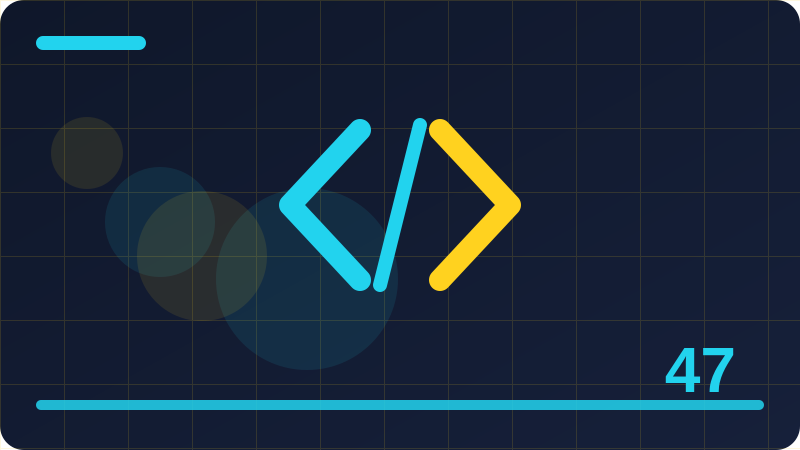

Chapter 47: Type Checking with JSDoc and TypeScript in Plain Words

Section 1: Why Types Help Even Small Programs
This section is about why types help even small programs, and it is worth slowing down for, because it touches something you will meet again and again in real JavaScript work. Many beginners rush past ideas like this, hoping they will make sense later, but a little patience now saves a lot of confusion later. Think of why types help even small programs as one practical tool in a larger toolbox: you do not need to master every detail today, but you do need to know what it is for, when to reach for it, and what a good result looks like. As you read, keep a small example in mind, try the code, and notice what changes when you change one small part of it.
In plain terms, why types help even small programs works by giving you a clear, repeatable way to handle a common problem instead of improvising a new solution every time. That repeatability matters, because programs grow, teammates join, and code written in a hurry is code someone must later read, test and fix. When you follow a steady pattern, your program becomes easier to reason about: you can predict what should happen, spot what actually happened, and close the gap between the two. The example below shows the pattern in miniature, so you can see the shape of the idea before you apply it to a larger project.
Look closely at the code example for this section and run it in your head, or better, in a real file, before you judge whether you understand it. Change a value, rename a variable, or remove a line and watch what happens, because that kind of small experiment turns a vague feeling into real knowledge. If the result surprises you, that surprise is valuable: it shows you an assumption you were making without noticing it. Write that assumption down, test it again, and you will remember the lesson far longer than if you had simply memorised a definition.
Beginners often stumble on why types help even small programs not because the idea is difficult, but because they try to do too much at once or copy a large block without understanding its parts. A safer approach is to start with the smallest version that works, confirm it, and then add one improvement at a time, testing after each change. Watch out for silent mistakes too: code that runs without an error can still be wrong if it saves the wrong value, shows the wrong list, or ignores what the user just typed.
To make why types help even small programs stick, connect it to something you have already built, especially if you are working through the later chapters of this book. Ask yourself where this idea would help, where it would be overkill, and what would break if you left it out entirely. Those three questions force you to think like a builder, not just a reader, and they help you choose wisely when a real project offers many possible tools.
/** @param {string} name @returns {string} */
function greet(name) { return 'Hi, ' + name; }
console.log(greet('Ada'));Check: In your own words, what is the main idea of Why Types Help Even Small Programs, and where would you use it in a small JavaScript project?
Section 2: Types You Already Use Without Noticing
This section is about types you already use without noticing, and it is worth slowing down for, because it touches something you will meet again and again in real JavaScript work. Many beginners rush past ideas like this, hoping they will make sense later, but a little patience now saves a lot of confusion later. Think of types you already use without noticing as one practical tool in a larger toolbox: you do not need to master every detail today, but you do need to know what it is for, when to reach for it, and what a good result looks like. As you read, keep a small example in mind, try the code, and notice what changes when you change one small part of it.
In plain terms, types you already use without noticing works by giving you a clear, repeatable way to handle a common problem instead of improvising a new solution every time. That repeatability matters, because programs grow, teammates join, and code written in a hurry is code someone must later read, test and fix. When you follow a steady pattern, your program becomes easier to reason about: you can predict what should happen, spot what actually happened, and close the gap between the two. The example below shows the pattern in miniature, so you can see the shape of the idea before you apply it to a larger project.
Look closely at the code example for this section and run it in your head, or better, in a real file, before you judge whether you understand it. Change a value, rename a variable, or remove a line and watch what happens, because that kind of small experiment turns a vague feeling into real knowledge. If the result surprises you, that surprise is valuable: it shows you an assumption you were making without noticing it. Write that assumption down, test it again, and you will remember the lesson far longer than if you had simply memorised a definition.
Beginners often stumble on types you already use without noticing not because the idea is difficult, but because they try to do too much at once or copy a large block without understanding its parts. A safer approach is to start with the smallest version that works, confirm it, and then add one improvement at a time, testing after each change. Watch out for silent mistakes too: code that runs without an error can still be wrong if it saves the wrong value, shows the wrong list, or ignores what the user just typed.
To make types you already use without noticing stick, connect it to something you have already built, especially if you are working through the later chapters of this book. Ask yourself where this idea would help, where it would be overkill, and what would break if you left it out entirely. Those three questions force you to think like a builder, not just a reader, and they help you choose wisely when a real project offers many possible tools.
/** @typedef {{id: number, title: string}} Task */
const task = { id: 1, title: 'Learn types' };
console.log(task.title);Check: In your own words, what is the main idea of Types You Already Use Without Noticing, and where would you use it in a small JavaScript project?
Section 3: When a Wrong Type Causes a Bug
This section is about when a wrong type causes a bug, and it is worth slowing down for, because it touches something you will meet again and again in real JavaScript work. Many beginners rush past ideas like this, hoping they will make sense later, but a little patience now saves a lot of confusion later. Think of when a wrong type causes a bug as one practical tool in a larger toolbox: you do not need to master every detail today, but you do need to know what it is for, when to reach for it, and what a good result looks like. As you read, keep a small example in mind, try the code, and notice what changes when you change one small part of it.
In plain terms, when a wrong type causes a bug works by giving you a clear, repeatable way to handle a common problem instead of improvising a new solution every time. That repeatability matters, because programs grow, teammates join, and code written in a hurry is code someone must later read, test and fix. When you follow a steady pattern, your program becomes easier to reason about: you can predict what should happen, spot what actually happened, and close the gap between the two. The example below shows the pattern in miniature, so you can see the shape of the idea before you apply it to a larger project.
Look closely at the code example for this section and run it in your head, or better, in a real file, before you judge whether you understand it. Change a value, rename a variable, or remove a line and watch what happens, because that kind of small experiment turns a vague feeling into real knowledge. If the result surprises you, that surprise is valuable: it shows you an assumption you were making without noticing it. Write that assumption down, test it again, and you will remember the lesson far longer than if you had simply memorised a definition.
Beginners often stumble on when a wrong type causes a bug not because the idea is difficult, but because they try to do too much at once or copy a large block without understanding its parts. A safer approach is to start with the smallest version that works, confirm it, and then add one improvement at a time, testing after each change. Watch out for silent mistakes too: code that runs without an error can still be wrong if it saves the wrong value, shows the wrong list, or ignores what the user just typed.
To make when a wrong type causes a bug stick, connect it to something you have already built, especially if you are working through the later chapters of this book. Ask yourself where this idea would help, where it would be overkill, and what would break if you left it out entirely. Those three questions force you to think like a builder, not just a reader, and they help you choose wisely when a real project offers many possible tools.
function double(n) { return n * 2; }
console.log(double(21));Check: In your own words, what is the main idea of When a Wrong Type Causes a Bug, and where would you use it in a small JavaScript project?
Section 4: JSDoc: Types in Ordinary Comments
This section is about jsdoc: types in ordinary comments, and it is worth slowing down for, because it touches something you will meet again and again in real JavaScript work. Many beginners rush past ideas like this, hoping they will make sense later, but a little patience now saves a lot of confusion later. Think of jsdoc: types in ordinary comments as one practical tool in a larger toolbox: you do not need to master every detail today, but you do need to know what it is for, when to reach for it, and what a good result looks like. As you read, keep a small example in mind, try the code, and notice what changes when you change one small part of it.
In plain terms, jsdoc: types in ordinary comments works by giving you a clear, repeatable way to handle a common problem instead of improvising a new solution every time. That repeatability matters, because programs grow, teammates join, and code written in a hurry is code someone must later read, test and fix. When you follow a steady pattern, your program becomes easier to reason about: you can predict what should happen, spot what actually happened, and close the gap between the two. The example below shows the pattern in miniature, so you can see the shape of the idea before you apply it to a larger project.
Look closely at the code example for this section and run it in your head, or better, in a real file, before you judge whether you understand it. Change a value, rename a variable, or remove a line and watch what happens, because that kind of small experiment turns a vague feeling into real knowledge. If the result surprises you, that surprise is valuable: it shows you an assumption you were making without noticing it. Write that assumption down, test it again, and you will remember the lesson far longer than if you had simply memorised a definition.
Beginners often stumble on jsdoc: types in ordinary comments not because the idea is difficult, but because they try to do too much at once or copy a large block without understanding its parts. A safer approach is to start with the smallest version that works, confirm it, and then add one improvement at a time, testing after each change. Watch out for silent mistakes too: code that runs without an error can still be wrong if it saves the wrong value, shows the wrong list, or ignores what the user just typed.
To make jsdoc: types in ordinary comments stick, connect it to something you have already built, especially if you are working through the later chapters of this book. Ask yourself where this idea would help, where it would be overkill, and what would break if you left it out entirely. Those three questions force you to think like a builder, not just a reader, and they help you choose wisely when a real project offers many possible tools.
const user = { name: 'Kel', age: 24 };
console.log(user.name);Check: In your own words, what is the main idea of JSDoc: Types in Ordinary Comments, and where would you use it in a small JavaScript project?
Section 5: Writing Your First JSDoc Comment
This section is about writing your first jsdoc comment, and it is worth slowing down for, because it touches something you will meet again and again in real JavaScript work. Many beginners rush past ideas like this, hoping they will make sense later, but a little patience now saves a lot of confusion later. Think of writing your first jsdoc comment as one practical tool in a larger toolbox: you do not need to master every detail today, but you do need to know what it is for, when to reach for it, and what a good result looks like. As you read, keep a small example in mind, try the code, and notice what changes when you change one small part of it.
In plain terms, writing your first jsdoc comment works by giving you a clear, repeatable way to handle a common problem instead of improvising a new solution every time. That repeatability matters, because programs grow, teammates join, and code written in a hurry is code someone must later read, test and fix. When you follow a steady pattern, your program becomes easier to reason about: you can predict what should happen, spot what actually happened, and close the gap between the two. The example below shows the pattern in miniature, so you can see the shape of the idea before you apply it to a larger project.
Look closely at the code example for this section and run it in your head, or better, in a real file, before you judge whether you understand it. Change a value, rename a variable, or remove a line and watch what happens, because that kind of small experiment turns a vague feeling into real knowledge. If the result surprises you, that surprise is valuable: it shows you an assumption you were making without noticing it. Write that assumption down, test it again, and you will remember the lesson far longer than if you had simply memorised a definition.
Beginners often stumble on writing your first jsdoc comment not because the idea is difficult, but because they try to do too much at once or copy a large block without understanding its parts. A safer approach is to start with the smallest version that works, confirm it, and then add one improvement at a time, testing after each change. Watch out for silent mistakes too: code that runs without an error can still be wrong if it saves the wrong value, shows the wrong list, or ignores what the user just typed.
To make writing your first jsdoc comment stick, connect it to something you have already built, especially if you are working through the later chapters of this book. Ask yourself where this idea would help, where it would be overkill, and what would break if you left it out entirely. Those three questions force you to think like a builder, not just a reader, and they help you choose wisely when a real project offers many possible tools.
/** @param {number} a @param {number} b @returns {number} */
function add(a, b) { return a + b; }
console.log(add(2, 3));Check: In your own words, what is the main idea of Writing Your First JSDoc Comment, and where would you use it in a small JavaScript project?
Section 6: Describing Parameters with @param
This section is about describing parameters with @param, and it is worth slowing down for, because it touches something you will meet again and again in real JavaScript work. Many beginners rush past ideas like this, hoping they will make sense later, but a little patience now saves a lot of confusion later. Think of describing parameters with @param as one practical tool in a larger toolbox: you do not need to master every detail today, but you do need to know what it is for, when to reach for it, and what a good result looks like. As you read, keep a small example in mind, try the code, and notice what changes when you change one small part of it.
In plain terms, describing parameters with @param works by giving you a clear, repeatable way to handle a common problem instead of improvising a new solution every time. That repeatability matters, because programs grow, teammates join, and code written in a hurry is code someone must later read, test and fix. When you follow a steady pattern, your program becomes easier to reason about: you can predict what should happen, spot what actually happened, and close the gap between the two. The example below shows the pattern in miniature, so you can see the shape of the idea before you apply it to a larger project.
Look closely at the code example for this section and run it in your head, or better, in a real file, before you judge whether you understand it. Change a value, rename a variable, or remove a line and watch what happens, because that kind of small experiment turns a vague feeling into real knowledge. If the result surprises you, that surprise is valuable: it shows you an assumption you were making without noticing it. Write that assumption down, test it again, and you will remember the lesson far longer than if you had simply memorised a definition.
Beginners often stumble on describing parameters with @param not because the idea is difficult, but because they try to do too much at once or copy a large block without understanding its parts. A safer approach is to start with the smallest version that works, confirm it, and then add one improvement at a time, testing after each change. Watch out for silent mistakes too: code that runs without an error can still be wrong if it saves the wrong value, shows the wrong list, or ignores what the user just typed.
To make describing parameters with @param stick, connect it to something you have already built, especially if you are working through the later chapters of this book. Ask yourself where this idea would help, where it would be overkill, and what would break if you left it out entirely. Those three questions force you to think like a builder, not just a reader, and they help you choose wisely when a real project offers many possible tools.
/** @param {string} name @returns {string} */
function greet(name) { return 'Hi, ' + name; }
console.log(greet('Ada'));Check: In your own words, what is the main idea of Describing Parameters with @param, and where would you use it in a small JavaScript project?
Section 7: Describing Return Values with @returns
This section is about describing return values with @returns, and it is worth slowing down for, because it touches something you will meet again and again in real JavaScript work. Many beginners rush past ideas like this, hoping they will make sense later, but a little patience now saves a lot of confusion later. Think of describing return values with @returns as one practical tool in a larger toolbox: you do not need to master every detail today, but you do need to know what it is for, when to reach for it, and what a good result looks like. As you read, keep a small example in mind, try the code, and notice what changes when you change one small part of it.
In plain terms, describing return values with @returns works by giving you a clear, repeatable way to handle a common problem instead of improvising a new solution every time. That repeatability matters, because programs grow, teammates join, and code written in a hurry is code someone must later read, test and fix. When you follow a steady pattern, your program becomes easier to reason about: you can predict what should happen, spot what actually happened, and close the gap between the two. The example below shows the pattern in miniature, so you can see the shape of the idea before you apply it to a larger project.
Look closely at the code example for this section and run it in your head, or better, in a real file, before you judge whether you understand it. Change a value, rename a variable, or remove a line and watch what happens, because that kind of small experiment turns a vague feeling into real knowledge. If the result surprises you, that surprise is valuable: it shows you an assumption you were making without noticing it. Write that assumption down, test it again, and you will remember the lesson far longer than if you had simply memorised a definition.
Beginners often stumble on describing return values with @returns not because the idea is difficult, but because they try to do too much at once or copy a large block without understanding its parts. A safer approach is to start with the smallest version that works, confirm it, and then add one improvement at a time, testing after each change. Watch out for silent mistakes too: code that runs without an error can still be wrong if it saves the wrong value, shows the wrong list, or ignores what the user just typed.
To make describing return values with @returns stick, connect it to something you have already built, especially if you are working through the later chapters of this book. Ask yourself where this idea would help, where it would be overkill, and what would break if you left it out entirely. Those three questions force you to think like a builder, not just a reader, and they help you choose wisely when a real project offers many possible tools.
/** @typedef {{id: number, title: string}} Task */
const task = { id: 1, title: 'Learn types' };
console.log(task.title);Check: In your own words, what is the main idea of Describing Return Values with @returns, and where would you use it in a small JavaScript project?
Section 8: Optional Parameters in JSDoc
This section is about optional parameters in jsdoc, and it is worth slowing down for, because it touches something you will meet again and again in real JavaScript work. Many beginners rush past ideas like this, hoping they will make sense later, but a little patience now saves a lot of confusion later. Think of optional parameters in jsdoc as one practical tool in a larger toolbox: you do not need to master every detail today, but you do need to know what it is for, when to reach for it, and what a good result looks like. As you read, keep a small example in mind, try the code, and notice what changes when you change one small part of it.
In plain terms, optional parameters in jsdoc works by giving you a clear, repeatable way to handle a common problem instead of improvising a new solution every time. That repeatability matters, because programs grow, teammates join, and code written in a hurry is code someone must later read, test and fix. When you follow a steady pattern, your program becomes easier to reason about: you can predict what should happen, spot what actually happened, and close the gap between the two. The example below shows the pattern in miniature, so you can see the shape of the idea before you apply it to a larger project.
Look closely at the code example for this section and run it in your head, or better, in a real file, before you judge whether you understand it. Change a value, rename a variable, or remove a line and watch what happens, because that kind of small experiment turns a vague feeling into real knowledge. If the result surprises you, that surprise is valuable: it shows you an assumption you were making without noticing it. Write that assumption down, test it again, and you will remember the lesson far longer than if you had simply memorised a definition.
Beginners often stumble on optional parameters in jsdoc not because the idea is difficult, but because they try to do too much at once or copy a large block without understanding its parts. A safer approach is to start with the smallest version that works, confirm it, and then add one improvement at a time, testing after each change. Watch out for silent mistakes too: code that runs without an error can still be wrong if it saves the wrong value, shows the wrong list, or ignores what the user just typed.
To make optional parameters in jsdoc stick, connect it to something you have already built, especially if you are working through the later chapters of this book. Ask yourself where this idea would help, where it would be overkill, and what would break if you left it out entirely. Those three questions force you to think like a builder, not just a reader, and they help you choose wisely when a real project offers many possible tools.
function double(n) { return n * 2; }
console.log(double(21));Check: In your own words, what is the main idea of Optional Parameters in JSDoc, and where would you use it in a small JavaScript project?
Section 9: Documenting Objects with @typedef
This section is about documenting objects with @typedef, and it is worth slowing down for, because it touches something you will meet again and again in real JavaScript work. Many beginners rush past ideas like this, hoping they will make sense later, but a little patience now saves a lot of confusion later. Think of documenting objects with @typedef as one practical tool in a larger toolbox: you do not need to master every detail today, but you do need to know what it is for, when to reach for it, and what a good result looks like. As you read, keep a small example in mind, try the code, and notice what changes when you change one small part of it.
In plain terms, documenting objects with @typedef works by giving you a clear, repeatable way to handle a common problem instead of improvising a new solution every time. That repeatability matters, because programs grow, teammates join, and code written in a hurry is code someone must later read, test and fix. When you follow a steady pattern, your program becomes easier to reason about: you can predict what should happen, spot what actually happened, and close the gap between the two. The example below shows the pattern in miniature, so you can see the shape of the idea before you apply it to a larger project.
Look closely at the code example for this section and run it in your head, or better, in a real file, before you judge whether you understand it. Change a value, rename a variable, or remove a line and watch what happens, because that kind of small experiment turns a vague feeling into real knowledge. If the result surprises you, that surprise is valuable: it shows you an assumption you were making without noticing it. Write that assumption down, test it again, and you will remember the lesson far longer than if you had simply memorised a definition.
Beginners often stumble on documenting objects with @typedef not because the idea is difficult, but because they try to do too much at once or copy a large block without understanding its parts. A safer approach is to start with the smallest version that works, confirm it, and then add one improvement at a time, testing after each change. Watch out for silent mistakes too: code that runs without an error can still be wrong if it saves the wrong value, shows the wrong list, or ignores what the user just typed.
To make documenting objects with @typedef stick, connect it to something you have already built, especially if you are working through the later chapters of this book. Ask yourself where this idea would help, where it would be overkill, and what would break if you left it out entirely. Those three questions force you to think like a builder, not just a reader, and they help you choose wisely when a real project offers many possible tools.
const user = { name: 'Kel', age: 24 };
console.log(user.name);Check: In your own words, what is the main idea of Documenting Objects with @typedef, and where would you use it in a small JavaScript project?
Section 10: Arrays and Nested Objects in JSDoc
This section is about arrays and nested objects in jsdoc, and it is worth slowing down for, because it touches something you will meet again and again in real JavaScript work. Many beginners rush past ideas like this, hoping they will make sense later, but a little patience now saves a lot of confusion later. Think of arrays and nested objects in jsdoc as one practical tool in a larger toolbox: you do not need to master every detail today, but you do need to know what it is for, when to reach for it, and what a good result looks like. As you read, keep a small example in mind, try the code, and notice what changes when you change one small part of it.
In plain terms, arrays and nested objects in jsdoc works by giving you a clear, repeatable way to handle a common problem instead of improvising a new solution every time. That repeatability matters, because programs grow, teammates join, and code written in a hurry is code someone must later read, test and fix. When you follow a steady pattern, your program becomes easier to reason about: you can predict what should happen, spot what actually happened, and close the gap between the two. The example below shows the pattern in miniature, so you can see the shape of the idea before you apply it to a larger project.
Look closely at the code example for this section and run it in your head, or better, in a real file, before you judge whether you understand it. Change a value, rename a variable, or remove a line and watch what happens, because that kind of small experiment turns a vague feeling into real knowledge. If the result surprises you, that surprise is valuable: it shows you an assumption you were making without noticing it. Write that assumption down, test it again, and you will remember the lesson far longer than if you had simply memorised a definition.
Beginners often stumble on arrays and nested objects in jsdoc not because the idea is difficult, but because they try to do too much at once or copy a large block without understanding its parts. A safer approach is to start with the smallest version that works, confirm it, and then add one improvement at a time, testing after each change. Watch out for silent mistakes too: code that runs without an error can still be wrong if it saves the wrong value, shows the wrong list, or ignores what the user just typed.
To make arrays and nested objects in jsdoc stick, connect it to something you have already built, especially if you are working through the later chapters of this book. Ask yourself where this idea would help, where it would be overkill, and what would break if you left it out entirely. Those three questions force you to think like a builder, not just a reader, and they help you choose wisely when a real project offers many possible tools.
/** @param {number} a @param {number} b @returns {number} */
function add(a, b) { return a + b; }
console.log(add(2, 3));Check: In your own words, what is the main idea of Arrays and Nested Objects in JSDoc, and where would you use it in a small JavaScript project?
Section 11: How Editors Read JSDoc for You
This section is about how editors read jsdoc for you, and it is worth slowing down for, because it touches something you will meet again and again in real JavaScript work. Many beginners rush past ideas like this, hoping they will make sense later, but a little patience now saves a lot of confusion later. Think of how editors read jsdoc for you as one practical tool in a larger toolbox: you do not need to master every detail today, but you do need to know what it is for, when to reach for it, and what a good result looks like. As you read, keep a small example in mind, try the code, and notice what changes when you change one small part of it.
In plain terms, how editors read jsdoc for you works by giving you a clear, repeatable way to handle a common problem instead of improvising a new solution every time. That repeatability matters, because programs grow, teammates join, and code written in a hurry is code someone must later read, test and fix. When you follow a steady pattern, your program becomes easier to reason about: you can predict what should happen, spot what actually happened, and close the gap between the two. The example below shows the pattern in miniature, so you can see the shape of the idea before you apply it to a larger project.
Look closely at the code example for this section and run it in your head, or better, in a real file, before you judge whether you understand it. Change a value, rename a variable, or remove a line and watch what happens, because that kind of small experiment turns a vague feeling into real knowledge. If the result surprises you, that surprise is valuable: it shows you an assumption you were making without noticing it. Write that assumption down, test it again, and you will remember the lesson far longer than if you had simply memorised a definition.
Beginners often stumble on how editors read jsdoc for you not because the idea is difficult, but because they try to do too much at once or copy a large block without understanding its parts. A safer approach is to start with the smallest version that works, confirm it, and then add one improvement at a time, testing after each change. Watch out for silent mistakes too: code that runs without an error can still be wrong if it saves the wrong value, shows the wrong list, or ignores what the user just typed.
To make how editors read jsdoc for you stick, connect it to something you have already built, especially if you are working through the later chapters of this book. Ask yourself where this idea would help, where it would be overkill, and what would break if you left it out entirely. Those three questions force you to think like a builder, not just a reader, and they help you choose wisely when a real project offers many possible tools.
/** @param {string} name @returns {string} */
function greet(name) { return 'Hi, ' + name; }
console.log(greet('Ada'));Check: In your own words, what is the main idea of How Editors Read JSDoc for You, and where would you use it in a small JavaScript project?
Section 12: Catching Type Mistakes in Your Editor
This section is about catching type mistakes in your editor, and it is worth slowing down for, because it touches something you will meet again and again in real JavaScript work. Many beginners rush past ideas like this, hoping they will make sense later, but a little patience now saves a lot of confusion later. Think of catching type mistakes in your editor as one practical tool in a larger toolbox: you do not need to master every detail today, but you do need to know what it is for, when to reach for it, and what a good result looks like. As you read, keep a small example in mind, try the code, and notice what changes when you change one small part of it.
In plain terms, catching type mistakes in your editor works by giving you a clear, repeatable way to handle a common problem instead of improvising a new solution every time. That repeatability matters, because programs grow, teammates join, and code written in a hurry is code someone must later read, test and fix. When you follow a steady pattern, your program becomes easier to reason about: you can predict what should happen, spot what actually happened, and close the gap between the two. The example below shows the pattern in miniature, so you can see the shape of the idea before you apply it to a larger project.
Look closely at the code example for this section and run it in your head, or better, in a real file, before you judge whether you understand it. Change a value, rename a variable, or remove a line and watch what happens, because that kind of small experiment turns a vague feeling into real knowledge. If the result surprises you, that surprise is valuable: it shows you an assumption you were making without noticing it. Write that assumption down, test it again, and you will remember the lesson far longer than if you had simply memorised a definition.
Beginners often stumble on catching type mistakes in your editor not because the idea is difficult, but because they try to do too much at once or copy a large block without understanding its parts. A safer approach is to start with the smallest version that works, confirm it, and then add one improvement at a time, testing after each change. Watch out for silent mistakes too: code that runs without an error can still be wrong if it saves the wrong value, shows the wrong list, or ignores what the user just typed.
To make catching type mistakes in your editor stick, connect it to something you have already built, especially if you are working through the later chapters of this book. Ask yourself where this idea would help, where it would be overkill, and what would break if you left it out entirely. Those three questions force you to think like a builder, not just a reader, and they help you choose wisely when a real project offers many possible tools.
/** @typedef {{id: number, title: string}} Task */
const task = { id: 1, title: 'Learn types' };
console.log(task.title);Check: In your own words, what is the main idea of Catching Type Mistakes in Your Editor, and where would you use it in a small JavaScript project?
Section 13: JSDoc and Better Autocomplete
This section is about jsdoc and better autocomplete, and it is worth slowing down for, because it touches something you will meet again and again in real JavaScript work. Many beginners rush past ideas like this, hoping they will make sense later, but a little patience now saves a lot of confusion later. Think of jsdoc and better autocomplete as one practical tool in a larger toolbox: you do not need to master every detail today, but you do need to know what it is for, when to reach for it, and what a good result looks like. As you read, keep a small example in mind, try the code, and notice what changes when you change one small part of it.
In plain terms, jsdoc and better autocomplete works by giving you a clear, repeatable way to handle a common problem instead of improvising a new solution every time. That repeatability matters, because programs grow, teammates join, and code written in a hurry is code someone must later read, test and fix. When you follow a steady pattern, your program becomes easier to reason about: you can predict what should happen, spot what actually happened, and close the gap between the two. The example below shows the pattern in miniature, so you can see the shape of the idea before you apply it to a larger project.
Look closely at the code example for this section and run it in your head, or better, in a real file, before you judge whether you understand it. Change a value, rename a variable, or remove a line and watch what happens, because that kind of small experiment turns a vague feeling into real knowledge. If the result surprises you, that surprise is valuable: it shows you an assumption you were making without noticing it. Write that assumption down, test it again, and you will remember the lesson far longer than if you had simply memorised a definition.
Beginners often stumble on jsdoc and better autocomplete not because the idea is difficult, but because they try to do too much at once or copy a large block without understanding its parts. A safer approach is to start with the smallest version that works, confirm it, and then add one improvement at a time, testing after each change. Watch out for silent mistakes too: code that runs without an error can still be wrong if it saves the wrong value, shows the wrong list, or ignores what the user just typed.
To make jsdoc and better autocomplete stick, connect it to something you have already built, especially if you are working through the later chapters of this book. Ask yourself where this idea would help, where it would be overkill, and what would break if you left it out entirely. Those three questions force you to think like a builder, not just a reader, and they help you choose wisely when a real project offers many possible tools.
function double(n) { return n * 2; }
console.log(double(21));Check: In your own words, what is the main idea of JSDoc and Better Autocomplete, and where would you use it in a small JavaScript project?
Section 14: When JSDoc Is Enough
This section is about when jsdoc is enough, and it is worth slowing down for, because it touches something you will meet again and again in real JavaScript work. Many beginners rush past ideas like this, hoping they will make sense later, but a little patience now saves a lot of confusion later. Think of when jsdoc is enough as one practical tool in a larger toolbox: you do not need to master every detail today, but you do need to know what it is for, when to reach for it, and what a good result looks like. As you read, keep a small example in mind, try the code, and notice what changes when you change one small part of it.
In plain terms, when jsdoc is enough works by giving you a clear, repeatable way to handle a common problem instead of improvising a new solution every time. That repeatability matters, because programs grow, teammates join, and code written in a hurry is code someone must later read, test and fix. When you follow a steady pattern, your program becomes easier to reason about: you can predict what should happen, spot what actually happened, and close the gap between the two. The example below shows the pattern in miniature, so you can see the shape of the idea before you apply it to a larger project.
Look closely at the code example for this section and run it in your head, or better, in a real file, before you judge whether you understand it. Change a value, rename a variable, or remove a line and watch what happens, because that kind of small experiment turns a vague feeling into real knowledge. If the result surprises you, that surprise is valuable: it shows you an assumption you were making without noticing it. Write that assumption down, test it again, and you will remember the lesson far longer than if you had simply memorised a definition.
Beginners often stumble on when jsdoc is enough not because the idea is difficult, but because they try to do too much at once or copy a large block without understanding its parts. A safer approach is to start with the smallest version that works, confirm it, and then add one improvement at a time, testing after each change. Watch out for silent mistakes too: code that runs without an error can still be wrong if it saves the wrong value, shows the wrong list, or ignores what the user just typed.
To make when jsdoc is enough stick, connect it to something you have already built, especially if you are working through the later chapters of this book. Ask yourself where this idea would help, where it would be overkill, and what would break if you left it out entirely. Those three questions force you to think like a builder, not just a reader, and they help you choose wisely when a real project offers many possible tools.
const user = { name: 'Kel', age: 24 };
console.log(user.name);Check: In your own words, what is the main idea of When JSDoc Is Enough, and where would you use it in a small JavaScript project?
Section 15: TypeScript in Plain Words
This section is about typescript in plain words, and it is worth slowing down for, because it touches something you will meet again and again in real JavaScript work. Many beginners rush past ideas like this, hoping they will make sense later, but a little patience now saves a lot of confusion later. Think of typescript in plain words as one practical tool in a larger toolbox: you do not need to master every detail today, but you do need to know what it is for, when to reach for it, and what a good result looks like. As you read, keep a small example in mind, try the code, and notice what changes when you change one small part of it.
In plain terms, typescript in plain words works by giving you a clear, repeatable way to handle a common problem instead of improvising a new solution every time. That repeatability matters, because programs grow, teammates join, and code written in a hurry is code someone must later read, test and fix. When you follow a steady pattern, your program becomes easier to reason about: you can predict what should happen, spot what actually happened, and close the gap between the two. The example below shows the pattern in miniature, so you can see the shape of the idea before you apply it to a larger project.
Look closely at the code example for this section and run it in your head, or better, in a real file, before you judge whether you understand it. Change a value, rename a variable, or remove a line and watch what happens, because that kind of small experiment turns a vague feeling into real knowledge. If the result surprises you, that surprise is valuable: it shows you an assumption you were making without noticing it. Write that assumption down, test it again, and you will remember the lesson far longer than if you had simply memorised a definition.
Beginners often stumble on typescript in plain words not because the idea is difficult, but because they try to do too much at once or copy a large block without understanding its parts. A safer approach is to start with the smallest version that works, confirm it, and then add one improvement at a time, testing after each change. Watch out for silent mistakes too: code that runs without an error can still be wrong if it saves the wrong value, shows the wrong list, or ignores what the user just typed.
To make typescript in plain words stick, connect it to something you have already built, especially if you are working through the later chapters of this book. Ask yourself where this idea would help, where it would be overkill, and what would break if you left it out entirely. Those three questions force you to think like a builder, not just a reader, and they help you choose wisely when a real project offers many possible tools.
/** @param {number} a @param {number} b @returns {number} */
function add(a, b) { return a + b; }
console.log(add(2, 3));Check: In your own words, what is the main idea of TypeScript in Plain Words, and where would you use it in a small JavaScript project?
Section 16: TypeScript Is JavaScript Plus Types
This section is about typescript is javascript plus types, and it is worth slowing down for, because it touches something you will meet again and again in real JavaScript work. Many beginners rush past ideas like this, hoping they will make sense later, but a little patience now saves a lot of confusion later. Think of typescript is javascript plus types as one practical tool in a larger toolbox: you do not need to master every detail today, but you do need to know what it is for, when to reach for it, and what a good result looks like. As you read, keep a small example in mind, try the code, and notice what changes when you change one small part of it.
In plain terms, typescript is javascript plus types works by giving you a clear, repeatable way to handle a common problem instead of improvising a new solution every time. That repeatability matters, because programs grow, teammates join, and code written in a hurry is code someone must later read, test and fix. When you follow a steady pattern, your program becomes easier to reason about: you can predict what should happen, spot what actually happened, and close the gap between the two. The example below shows the pattern in miniature, so you can see the shape of the idea before you apply it to a larger project.
Look closely at the code example for this section and run it in your head, or better, in a real file, before you judge whether you understand it. Change a value, rename a variable, or remove a line and watch what happens, because that kind of small experiment turns a vague feeling into real knowledge. If the result surprises you, that surprise is valuable: it shows you an assumption you were making without noticing it. Write that assumption down, test it again, and you will remember the lesson far longer than if you had simply memorised a definition.
Beginners often stumble on typescript is javascript plus types not because the idea is difficult, but because they try to do too much at once or copy a large block without understanding its parts. A safer approach is to start with the smallest version that works, confirm it, and then add one improvement at a time, testing after each change. Watch out for silent mistakes too: code that runs without an error can still be wrong if it saves the wrong value, shows the wrong list, or ignores what the user just typed.
To make typescript is javascript plus types stick, connect it to something you have already built, especially if you are working through the later chapters of this book. Ask yourself where this idea would help, where it would be overkill, and what would break if you left it out entirely. Those three questions force you to think like a builder, not just a reader, and they help you choose wisely when a real project offers many possible tools.
/** @param {string} name @returns {string} */
function greet(name) { return 'Hi, ' + name; }
console.log(greet('Ada'));Check: In your own words, what is the main idea of TypeScript Is JavaScript Plus Types, and where would you use it in a small JavaScript project?
Section 17: Adding Types to a Function
This section is about adding types to a function, and it is worth slowing down for, because it touches something you will meet again and again in real JavaScript work. Many beginners rush past ideas like this, hoping they will make sense later, but a little patience now saves a lot of confusion later. Think of adding types to a function as one practical tool in a larger toolbox: you do not need to master every detail today, but you do need to know what it is for, when to reach for it, and what a good result looks like. As you read, keep a small example in mind, try the code, and notice what changes when you change one small part of it.
In plain terms, adding types to a function works by giving you a clear, repeatable way to handle a common problem instead of improvising a new solution every time. That repeatability matters, because programs grow, teammates join, and code written in a hurry is code someone must later read, test and fix. When you follow a steady pattern, your program becomes easier to reason about: you can predict what should happen, spot what actually happened, and close the gap between the two. The example below shows the pattern in miniature, so you can see the shape of the idea before you apply it to a larger project.
Look closely at the code example for this section and run it in your head, or better, in a real file, before you judge whether you understand it. Change a value, rename a variable, or remove a line and watch what happens, because that kind of small experiment turns a vague feeling into real knowledge. If the result surprises you, that surprise is valuable: it shows you an assumption you were making without noticing it. Write that assumption down, test it again, and you will remember the lesson far longer than if you had simply memorised a definition.
Beginners often stumble on adding types to a function not because the idea is difficult, but because they try to do too much at once or copy a large block without understanding its parts. A safer approach is to start with the smallest version that works, confirm it, and then add one improvement at a time, testing after each change. Watch out for silent mistakes too: code that runs without an error can still be wrong if it saves the wrong value, shows the wrong list, or ignores what the user just typed.
To make adding types to a function stick, connect it to something you have already built, especially if you are working through the later chapters of this book. Ask yourself where this idea would help, where it would be overkill, and what would break if you left it out entirely. Those three questions force you to think like a builder, not just a reader, and they help you choose wisely when a real project offers many possible tools.
/** @typedef {{id: number, title: string}} Task */
const task = { id: 1, title: 'Learn types' };
console.log(task.title);Check: In your own words, what is the main idea of Adding Types to a Function, and where would you use it in a small JavaScript project?
Section 18: Types for Variables and Constants
This section is about types for variables and constants, and it is worth slowing down for, because it touches something you will meet again and again in real JavaScript work. Many beginners rush past ideas like this, hoping they will make sense later, but a little patience now saves a lot of confusion later. Think of types for variables and constants as one practical tool in a larger toolbox: you do not need to master every detail today, but you do need to know what it is for, when to reach for it, and what a good result looks like. As you read, keep a small example in mind, try the code, and notice what changes when you change one small part of it.
In plain terms, types for variables and constants works by giving you a clear, repeatable way to handle a common problem instead of improvising a new solution every time. That repeatability matters, because programs grow, teammates join, and code written in a hurry is code someone must later read, test and fix. When you follow a steady pattern, your program becomes easier to reason about: you can predict what should happen, spot what actually happened, and close the gap between the two. The example below shows the pattern in miniature, so you can see the shape of the idea before you apply it to a larger project.
Look closely at the code example for this section and run it in your head, or better, in a real file, before you judge whether you understand it. Change a value, rename a variable, or remove a line and watch what happens, because that kind of small experiment turns a vague feeling into real knowledge. If the result surprises you, that surprise is valuable: it shows you an assumption you were making without noticing it. Write that assumption down, test it again, and you will remember the lesson far longer than if you had simply memorised a definition.
Beginners often stumble on types for variables and constants not because the idea is difficult, but because they try to do too much at once or copy a large block without understanding its parts. A safer approach is to start with the smallest version that works, confirm it, and then add one improvement at a time, testing after each change. Watch out for silent mistakes too: code that runs without an error can still be wrong if it saves the wrong value, shows the wrong list, or ignores what the user just typed.
To make types for variables and constants stick, connect it to something you have already built, especially if you are working through the later chapters of this book. Ask yourself where this idea would help, where it would be overkill, and what would break if you left it out entirely. Those three questions force you to think like a builder, not just a reader, and they help you choose wisely when a real project offers many possible tools.
function double(n) { return n * 2; }
console.log(double(21));Check: In your own words, what is the main idea of Types for Variables and Constants, and where would you use it in a small JavaScript project?
Section 19: Interfaces: Shapes for Objects
This section is about interfaces: shapes for objects, and it is worth slowing down for, because it touches something you will meet again and again in real JavaScript work. Many beginners rush past ideas like this, hoping they will make sense later, but a little patience now saves a lot of confusion later. Think of interfaces: shapes for objects as one practical tool in a larger toolbox: you do not need to master every detail today, but you do need to know what it is for, when to reach for it, and what a good result looks like. As you read, keep a small example in mind, try the code, and notice what changes when you change one small part of it.
In plain terms, interfaces: shapes for objects works by giving you a clear, repeatable way to handle a common problem instead of improvising a new solution every time. That repeatability matters, because programs grow, teammates join, and code written in a hurry is code someone must later read, test and fix. When you follow a steady pattern, your program becomes easier to reason about: you can predict what should happen, spot what actually happened, and close the gap between the two. The example below shows the pattern in miniature, so you can see the shape of the idea before you apply it to a larger project.
Look closely at the code example for this section and run it in your head, or better, in a real file, before you judge whether you understand it. Change a value, rename a variable, or remove a line and watch what happens, because that kind of small experiment turns a vague feeling into real knowledge. If the result surprises you, that surprise is valuable: it shows you an assumption you were making without noticing it. Write that assumption down, test it again, and you will remember the lesson far longer than if you had simply memorised a definition.
Beginners often stumble on interfaces: shapes for objects not because the idea is difficult, but because they try to do too much at once or copy a large block without understanding its parts. A safer approach is to start with the smallest version that works, confirm it, and then add one improvement at a time, testing after each change. Watch out for silent mistakes too: code that runs without an error can still be wrong if it saves the wrong value, shows the wrong list, or ignores what the user just typed.
To make interfaces: shapes for objects stick, connect it to something you have already built, especially if you are working through the later chapters of this book. Ask yourself where this idea would help, where it would be overkill, and what would break if you left it out entirely. Those three questions force you to think like a builder, not just a reader, and they help you choose wisely when a real project offers many possible tools.
const user = { name: 'Kel', age: 24 };
console.log(user.name);Check: In your own words, what is the main idea of Interfaces: Shapes for Objects, and where would you use it in a small JavaScript project?
Section 20: Type Aliases for Reusable Shapes
This section is about type aliases for reusable shapes, and it is worth slowing down for, because it touches something you will meet again and again in real JavaScript work. Many beginners rush past ideas like this, hoping they will make sense later, but a little patience now saves a lot of confusion later. Think of type aliases for reusable shapes as one practical tool in a larger toolbox: you do not need to master every detail today, but you do need to know what it is for, when to reach for it, and what a good result looks like. As you read, keep a small example in mind, try the code, and notice what changes when you change one small part of it.
In plain terms, type aliases for reusable shapes works by giving you a clear, repeatable way to handle a common problem instead of improvising a new solution every time. That repeatability matters, because programs grow, teammates join, and code written in a hurry is code someone must later read, test and fix. When you follow a steady pattern, your program becomes easier to reason about: you can predict what should happen, spot what actually happened, and close the gap between the two. The example below shows the pattern in miniature, so you can see the shape of the idea before you apply it to a larger project.
Look closely at the code example for this section and run it in your head, or better, in a real file, before you judge whether you understand it. Change a value, rename a variable, or remove a line and watch what happens, because that kind of small experiment turns a vague feeling into real knowledge. If the result surprises you, that surprise is valuable: it shows you an assumption you were making without noticing it. Write that assumption down, test it again, and you will remember the lesson far longer than if you had simply memorised a definition.
Beginners often stumble on type aliases for reusable shapes not because the idea is difficult, but because they try to do too much at once or copy a large block without understanding its parts. A safer approach is to start with the smallest version that works, confirm it, and then add one improvement at a time, testing after each change. Watch out for silent mistakes too: code that runs without an error can still be wrong if it saves the wrong value, shows the wrong list, or ignores what the user just typed.
To make type aliases for reusable shapes stick, connect it to something you have already built, especially if you are working through the later chapters of this book. Ask yourself where this idea would help, where it would be overkill, and what would break if you left it out entirely. Those three questions force you to think like a builder, not just a reader, and they help you choose wisely when a real project offers many possible tools.
/** @param {number} a @param {number} b @returns {number} */
function add(a, b) { return a + b; }
console.log(add(2, 3));Check: In your own words, what is the main idea of Type Aliases for Reusable Shapes, and where would you use it in a small JavaScript project?
Section 21: Union Types: This or That
This section is about union types: this or that, and it is worth slowing down for, because it touches something you will meet again and again in real JavaScript work. Many beginners rush past ideas like this, hoping they will make sense later, but a little patience now saves a lot of confusion later. Think of union types: this or that as one practical tool in a larger toolbox: you do not need to master every detail today, but you do need to know what it is for, when to reach for it, and what a good result looks like. As you read, keep a small example in mind, try the code, and notice what changes when you change one small part of it.
In plain terms, union types: this or that works by giving you a clear, repeatable way to handle a common problem instead of improvising a new solution every time. That repeatability matters, because programs grow, teammates join, and code written in a hurry is code someone must later read, test and fix. When you follow a steady pattern, your program becomes easier to reason about: you can predict what should happen, spot what actually happened, and close the gap between the two. The example below shows the pattern in miniature, so you can see the shape of the idea before you apply it to a larger project.
Look closely at the code example for this section and run it in your head, or better, in a real file, before you judge whether you understand it. Change a value, rename a variable, or remove a line and watch what happens, because that kind of small experiment turns a vague feeling into real knowledge. If the result surprises you, that surprise is valuable: it shows you an assumption you were making without noticing it. Write that assumption down, test it again, and you will remember the lesson far longer than if you had simply memorised a definition.
Beginners often stumble on union types: this or that not because the idea is difficult, but because they try to do too much at once or copy a large block without understanding its parts. A safer approach is to start with the smallest version that works, confirm it, and then add one improvement at a time, testing after each change. Watch out for silent mistakes too: code that runs without an error can still be wrong if it saves the wrong value, shows the wrong list, or ignores what the user just typed.
To make union types: this or that stick, connect it to something you have already built, especially if you are working through the later chapters of this book. Ask yourself where this idea would help, where it would be overkill, and what would break if you left it out entirely. Those three questions force you to think like a builder, not just a reader, and they help you choose wisely when a real project offers many possible tools.
/** @param {string} name @returns {string} */
function greet(name) { return 'Hi, ' + name; }
console.log(greet('Ada'));Check: In your own words, what is the main idea of Union Types: This or That, and where would you use it in a small JavaScript project?
Section 22: Optional Properties and Missing Data
This section is about optional properties and missing data, and it is worth slowing down for, because it touches something you will meet again and again in real JavaScript work. Many beginners rush past ideas like this, hoping they will make sense later, but a little patience now saves a lot of confusion later. Think of optional properties and missing data as one practical tool in a larger toolbox: you do not need to master every detail today, but you do need to know what it is for, when to reach for it, and what a good result looks like. As you read, keep a small example in mind, try the code, and notice what changes when you change one small part of it.
In plain terms, optional properties and missing data works by giving you a clear, repeatable way to handle a common problem instead of improvising a new solution every time. That repeatability matters, because programs grow, teammates join, and code written in a hurry is code someone must later read, test and fix. When you follow a steady pattern, your program becomes easier to reason about: you can predict what should happen, spot what actually happened, and close the gap between the two. The example below shows the pattern in miniature, so you can see the shape of the idea before you apply it to a larger project.
Look closely at the code example for this section and run it in your head, or better, in a real file, before you judge whether you understand it. Change a value, rename a variable, or remove a line and watch what happens, because that kind of small experiment turns a vague feeling into real knowledge. If the result surprises you, that surprise is valuable: it shows you an assumption you were making without noticing it. Write that assumption down, test it again, and you will remember the lesson far longer than if you had simply memorised a definition.
Beginners often stumble on optional properties and missing data not because the idea is difficult, but because they try to do too much at once or copy a large block without understanding its parts. A safer approach is to start with the smallest version that works, confirm it, and then add one improvement at a time, testing after each change. Watch out for silent mistakes too: code that runs without an error can still be wrong if it saves the wrong value, shows the wrong list, or ignores what the user just typed.
To make optional properties and missing data stick, connect it to something you have already built, especially if you are working through the later chapters of this book. Ask yourself where this idea would help, where it would be overkill, and what would break if you left it out entirely. Those three questions force you to think like a builder, not just a reader, and they help you choose wisely when a real project offers many possible tools.
/** @typedef {{id: number, title: string}} Task */
const task = { id: 1, title: 'Learn types' };
console.log(task.title);Check: In your own words, what is the main idea of Optional Properties and Missing Data, and where would you use it in a small JavaScript project?
Section 23: Arrays, Tuples and Lists of Types
This section is about arrays, tuples and lists of types, and it is worth slowing down for, because it touches something you will meet again and again in real JavaScript work. Many beginners rush past ideas like this, hoping they will make sense later, but a little patience now saves a lot of confusion later. Think of arrays, tuples and lists of types as one practical tool in a larger toolbox: you do not need to master every detail today, but you do need to know what it is for, when to reach for it, and what a good result looks like. As you read, keep a small example in mind, try the code, and notice what changes when you change one small part of it.
In plain terms, arrays, tuples and lists of types works by giving you a clear, repeatable way to handle a common problem instead of improvising a new solution every time. That repeatability matters, because programs grow, teammates join, and code written in a hurry is code someone must later read, test and fix. When you follow a steady pattern, your program becomes easier to reason about: you can predict what should happen, spot what actually happened, and close the gap between the two. The example below shows the pattern in miniature, so you can see the shape of the idea before you apply it to a larger project.
Look closely at the code example for this section and run it in your head, or better, in a real file, before you judge whether you understand it. Change a value, rename a variable, or remove a line and watch what happens, because that kind of small experiment turns a vague feeling into real knowledge. If the result surprises you, that surprise is valuable: it shows you an assumption you were making without noticing it. Write that assumption down, test it again, and you will remember the lesson far longer than if you had simply memorised a definition.
Beginners often stumble on arrays, tuples and lists of types not because the idea is difficult, but because they try to do too much at once or copy a large block without understanding its parts. A safer approach is to start with the smallest version that works, confirm it, and then add one improvement at a time, testing after each change. Watch out for silent mistakes too: code that runs without an error can still be wrong if it saves the wrong value, shows the wrong list, or ignores what the user just typed.
To make arrays, tuples and lists of types stick, connect it to something you have already built, especially if you are working through the later chapters of this book. Ask yourself where this idea would help, where it would be overkill, and what would break if you left it out entirely. Those three questions force you to think like a builder, not just a reader, and they help you choose wisely when a real project offers many possible tools.
function double(n) { return n * 2; }
console.log(double(21));Check: In your own words, what is the main idea of Arrays, Tuples and Lists of Types, and where would you use it in a small JavaScript project?
Section 24: Functions as Types
This section is about functions as types, and it is worth slowing down for, because it touches something you will meet again and again in real JavaScript work. Many beginners rush past ideas like this, hoping they will make sense later, but a little patience now saves a lot of confusion later. Think of functions as types as one practical tool in a larger toolbox: you do not need to master every detail today, but you do need to know what it is for, when to reach for it, and what a good result looks like. As you read, keep a small example in mind, try the code, and notice what changes when you change one small part of it.
In plain terms, functions as types works by giving you a clear, repeatable way to handle a common problem instead of improvising a new solution every time. That repeatability matters, because programs grow, teammates join, and code written in a hurry is code someone must later read, test and fix. When you follow a steady pattern, your program becomes easier to reason about: you can predict what should happen, spot what actually happened, and close the gap between the two. The example below shows the pattern in miniature, so you can see the shape of the idea before you apply it to a larger project.
Look closely at the code example for this section and run it in your head, or better, in a real file, before you judge whether you understand it. Change a value, rename a variable, or remove a line and watch what happens, because that kind of small experiment turns a vague feeling into real knowledge. If the result surprises you, that surprise is valuable: it shows you an assumption you were making without noticing it. Write that assumption down, test it again, and you will remember the lesson far longer than if you had simply memorised a definition.
Beginners often stumble on functions as types not because the idea is difficult, but because they try to do too much at once or copy a large block without understanding its parts. A safer approach is to start with the smallest version that works, confirm it, and then add one improvement at a time, testing after each change. Watch out for silent mistakes too: code that runs without an error can still be wrong if it saves the wrong value, shows the wrong list, or ignores what the user just typed.
To make functions as types stick, connect it to something you have already built, especially if you are working through the later chapters of this book. Ask yourself where this idea would help, where it would be overkill, and what would break if you left it out entirely. Those three questions force you to think like a builder, not just a reader, and they help you choose wisely when a real project offers many possible tools.
const user = { name: 'Kel', age: 24 };
console.log(user.name);Check: In your own words, what is the main idea of Functions as Types, and where would you use it in a small JavaScript project?
Section 25: Classes and Types in Brief
This section is about classes and types in brief, and it is worth slowing down for, because it touches something you will meet again and again in real JavaScript work. Many beginners rush past ideas like this, hoping they will make sense later, but a little patience now saves a lot of confusion later. Think of classes and types in brief as one practical tool in a larger toolbox: you do not need to master every detail today, but you do need to know what it is for, when to reach for it, and what a good result looks like. As you read, keep a small example in mind, try the code, and notice what changes when you change one small part of it.
In plain terms, classes and types in brief works by giving you a clear, repeatable way to handle a common problem instead of improvising a new solution every time. That repeatability matters, because programs grow, teammates join, and code written in a hurry is code someone must later read, test and fix. When you follow a steady pattern, your program becomes easier to reason about: you can predict what should happen, spot what actually happened, and close the gap between the two. The example below shows the pattern in miniature, so you can see the shape of the idea before you apply it to a larger project.
Look closely at the code example for this section and run it in your head, or better, in a real file, before you judge whether you understand it. Change a value, rename a variable, or remove a line and watch what happens, because that kind of small experiment turns a vague feeling into real knowledge. If the result surprises you, that surprise is valuable: it shows you an assumption you were making without noticing it. Write that assumption down, test it again, and you will remember the lesson far longer than if you had simply memorised a definition.
Beginners often stumble on classes and types in brief not because the idea is difficult, but because they try to do too much at once or copy a large block without understanding its parts. A safer approach is to start with the smallest version that works, confirm it, and then add one improvement at a time, testing after each change. Watch out for silent mistakes too: code that runs without an error can still be wrong if it saves the wrong value, shows the wrong list, or ignores what the user just typed.
To make classes and types in brief stick, connect it to something you have already built, especially if you are working through the later chapters of this book. Ask yourself where this idea would help, where it would be overkill, and what would break if you left it out entirely. Those three questions force you to think like a builder, not just a reader, and they help you choose wisely when a real project offers many possible tools.
/** @param {number} a @param {number} b @returns {number} */
function add(a, b) { return a + b; }
console.log(add(2, 3));Check: In your own words, what is the main idea of Classes and Types in Brief, and where would you use it in a small JavaScript project?
Section 26: Generics in Plain Words
This section is about generics in plain words, and it is worth slowing down for, because it touches something you will meet again and again in real JavaScript work. Many beginners rush past ideas like this, hoping they will make sense later, but a little patience now saves a lot of confusion later. Think of generics in plain words as one practical tool in a larger toolbox: you do not need to master every detail today, but you do need to know what it is for, when to reach for it, and what a good result looks like. As you read, keep a small example in mind, try the code, and notice what changes when you change one small part of it.
In plain terms, generics in plain words works by giving you a clear, repeatable way to handle a common problem instead of improvising a new solution every time. That repeatability matters, because programs grow, teammates join, and code written in a hurry is code someone must later read, test and fix. When you follow a steady pattern, your program becomes easier to reason about: you can predict what should happen, spot what actually happened, and close the gap between the two. The example below shows the pattern in miniature, so you can see the shape of the idea before you apply it to a larger project.
Look closely at the code example for this section and run it in your head, or better, in a real file, before you judge whether you understand it. Change a value, rename a variable, or remove a line and watch what happens, because that kind of small experiment turns a vague feeling into real knowledge. If the result surprises you, that surprise is valuable: it shows you an assumption you were making without noticing it. Write that assumption down, test it again, and you will remember the lesson far longer than if you had simply memorised a definition.
Beginners often stumble on generics in plain words not because the idea is difficult, but because they try to do too much at once or copy a large block without understanding its parts. A safer approach is to start with the smallest version that works, confirm it, and then add one improvement at a time, testing after each change. Watch out for silent mistakes too: code that runs without an error can still be wrong if it saves the wrong value, shows the wrong list, or ignores what the user just typed.
To make generics in plain words stick, connect it to something you have already built, especially if you are working through the later chapters of this book. Ask yourself where this idea would help, where it would be overkill, and what would break if you left it out entirely. Those three questions force you to think like a builder, not just a reader, and they help you choose wisely when a real project offers many possible tools.
/** @param {string} name @returns {string} */
function greet(name) { return 'Hi, ' + name; }
console.log(greet('Ada'));Check: In your own words, what is the main idea of Generics in Plain Words, and where would you use it in a small JavaScript project?
Section 27: The any Type and Why to Avoid It
This section is about the any type and why to avoid it, and it is worth slowing down for, because it touches something you will meet again and again in real JavaScript work. Many beginners rush past ideas like this, hoping they will make sense later, but a little patience now saves a lot of confusion later. Think of the any type and why to avoid it as one practical tool in a larger toolbox: you do not need to master every detail today, but you do need to know what it is for, when to reach for it, and what a good result looks like. As you read, keep a small example in mind, try the code, and notice what changes when you change one small part of it.
In plain terms, the any type and why to avoid it works by giving you a clear, repeatable way to handle a common problem instead of improvising a new solution every time. That repeatability matters, because programs grow, teammates join, and code written in a hurry is code someone must later read, test and fix. When you follow a steady pattern, your program becomes easier to reason about: you can predict what should happen, spot what actually happened, and close the gap between the two. The example below shows the pattern in miniature, so you can see the shape of the idea before you apply it to a larger project.
Look closely at the code example for this section and run it in your head, or better, in a real file, before you judge whether you understand it. Change a value, rename a variable, or remove a line and watch what happens, because that kind of small experiment turns a vague feeling into real knowledge. If the result surprises you, that surprise is valuable: it shows you an assumption you were making without noticing it.
Beginners often stumble on the any type and why to avoid it not because the idea is difficult, but because they try to do too much at once or copy a large block without understanding its parts. A safer approach is to start with the smallest version that works, confirm it, and then add one improvement at a time, testing after each change. Watch out for silent mistakes too: code that runs without an error can still be wrong if it saves the wrong value, shows the wrong list, or ignores what the user just typed.
To make the any type and why to avoid it stick, connect it to something you have already built, especially if you are working through the later chapters of this book. Ask yourself where this idea would help, where it would be overkill, and what would break if you left it out entirely. Those three questions force you to think like a builder, not just a reader, and they help you choose wisely when a real project offers many possible tools.
/** @typedef {{id: number, title: string}} Task */
const task = { id: 1, title: 'Learn types' };
console.log(task.title);Check: In your own words, what is the main idea of The any Type and Why to Avoid It, and where would you use it in a small JavaScript project?
Section 28: Unknown Versus any
This section is about unknown versus any, and it is worth slowing down for, because it touches something you will meet again and again in real JavaScript work. Many beginners rush past ideas like this, hoping they will make sense later, but a little patience now saves a lot of confusion later. Think of unknown versus any as one practical tool in a larger toolbox: you do not need to master every detail today, but you do need to know what it is for, when to reach for it, and what a good result looks like. As you read, keep a small example in mind, try the code, and notice what changes when you change one small part of it.
In plain terms, unknown versus any works by giving you a clear, repeatable way to handle a common problem instead of improvising a new solution every time. That repeatability matters, because programs grow, teammates join, and code written in a hurry is code someone must later read, test and fix. When you follow a steady pattern, your program becomes easier to reason about: you can predict what should happen, spot what actually happened, and close the gap between the two. The example below shows the pattern in miniature, so you can see the shape of the idea before you apply it to a larger project.
Look closely at the code example for this section and run it in your head, or better, in a real file, before you judge whether you understand it. Change a value, rename a variable, or remove a line and watch what happens, because that kind of small experiment turns a vague feeling into real knowledge. If the result surprises you, that surprise is valuable: it shows you an assumption you were making without noticing it. Write that assumption down, test it again, and you will remember the lesson far longer than if you had simply memorised a definition.
Beginners often stumble on unknown versus any not because the idea is difficult, but because they try to do too much at once or copy a large block without understanding its parts. A safer approach is to start with the smallest version that works, confirm it, and then add one improvement at a time, testing after each change. Watch out for silent mistakes too: code that runs without an error can still be wrong if it saves the wrong value, shows the wrong list, or ignores what the user just typed.
To make unknown versus any stick, connect it to something you have already built, especially if you are working through the later chapters of this book. Ask yourself where this idea would help, where it would be overkill, and what would break if you left it out entirely. Those three questions force you to think like a builder, not just a reader, and they help you choose wisely when a real project offers many possible tools.
function double(n) { return n * 2; }
console.log(double(21));Check: In your own words, what is the main idea of Unknown Versus any, and where would you use it in a small JavaScript project?
Section 29: Type Narrowing with Simple Checks
This section is about type narrowing with simple checks, and it is worth slowing down for, because it touches something you will meet again and again in real JavaScript work. Many beginners rush past ideas like this, hoping they will make sense later, but a little patience now saves a lot of confusion later. Think of type narrowing with simple checks as one practical tool in a larger toolbox: you do not need to master every detail today, but you do need to know what it is for, when to reach for it, and what a good result looks like. As you read, keep a small example in mind, try the code, and notice what changes when you change one small part of it.
In plain terms, type narrowing with simple checks works by giving you a clear, repeatable way to handle a common problem instead of improvising a new solution every time. That repeatability matters, because programs grow, teammates join, and code written in a hurry is code someone must later read, test and fix. When you follow a steady pattern, your program becomes easier to reason about: you can predict what should happen, spot what actually happened, and close the gap between the two. The example below shows the pattern in miniature, so you can see the shape of the idea before you apply it to a larger project.
Look closely at the code example for this section and run it in your head, or better, in a real file, before you judge whether you understand it. Change a value, rename a variable, or remove a line and watch what happens, because that kind of small experiment turns a vague feeling into real knowledge. If the result surprises you, that surprise is valuable: it shows you an assumption you were making without noticing it. Write that assumption down, test it again, and you will remember the lesson far longer than if you had simply memorised a definition.
Beginners often stumble on type narrowing with simple checks not because the idea is difficult, but because they try to do too much at once or copy a large block without understanding its parts. A safer approach is to start with the smallest version that works, confirm it, and then add one improvement at a time, testing after each change. Watch out for silent mistakes too: code that runs without an error can still be wrong if it saves the wrong value, shows the wrong list, or ignores what the user just typed.
To make type narrowing with simple checks stick, connect it to something you have already built, especially if you are working through the later chapters of this book. Ask yourself where this idea would help, where it would be overkill, and what would break if you left it out entirely. Those three questions force you to think like a builder, not just a reader, and they help you choose wisely when a real project offers many possible tools.
const user = { name: 'Kel', age: 24 };
console.log(user.name);Check: In your own words, what is the main idea of Type Narrowing with Simple Checks, and where would you use it in a small JavaScript project?
Section 30: Strict Mode: Helpful or Annoying
This section is about strict mode: helpful or annoying, and it is worth slowing down for, because it touches something you will meet again and again in real JavaScript work. Many beginners rush past ideas like this, hoping they will make sense later, but a little patience now saves a lot of confusion later. Think of strict mode: helpful or annoying as one practical tool in a larger toolbox: you do not need to master every detail today, but you do need to know what it is for, when to reach for it, and what a good result looks like. As you read, keep a small example in mind, try the code, and notice what changes when you change one small part of it.
In plain terms, strict mode: helpful or annoying works by giving you a clear, repeatable way to handle a common problem instead of improvising a new solution every time. That repeatability matters, because programs grow, teammates join, and code written in a hurry is code someone must later read, test and fix. When you follow a steady pattern, your program becomes easier to reason about: you can predict what should happen, spot what actually happened, and close the gap between the two. The example below shows the pattern in miniature, so you can see the shape of the idea before you apply it to a larger project.
Look closely at the code example for this section and run it in your head, or better, in a real file, before you judge whether you understand it. Change a value, rename a variable, or remove a line and watch what happens, because that kind of small experiment turns a vague feeling into real knowledge. If the result surprises you, that surprise is valuable: it shows you an assumption you were making without noticing it. Write that assumption down, test it again, and you will remember the lesson far longer than if you had simply memorised a definition.
Beginners often stumble on strict mode: helpful or annoying not because the idea is difficult, but because they try to do too much at once or copy a large block without understanding its parts. A safer approach is to start with the smallest version that works, confirm it, and then add one improvement at a time, testing after each change. Watch out for silent mistakes too: code that runs without an error can still be wrong if it saves the wrong value, shows the wrong list, or ignores what the user just typed.
To make strict mode: helpful or annoying stick, connect it to something you have already built, especially if you are working through the later chapters of this book. Ask yourself where this idea would help, where it would be overkill, and what would break if you left it out entirely. Those three questions force you to think like a builder, not just a reader, and they help you choose wisely when a real project offers many possible tools.
/** @param {number} a @param {number} b @returns {number} */
function add(a, b) { return a + b; }
console.log(add(2, 3));Check: In your own words, what is the main idea of Strict Mode: Helpful or Annoying, and where would you use it in a small JavaScript project?
Section 31: Migrating a File Gradually to TypeScript
This section is about migrating a file gradually to typescript, and it is worth slowing down for, because it touches something you will meet again and again in real JavaScript work. Many beginners rush past ideas like this, hoping they will make sense later, but a little patience now saves a lot of confusion later. Think of migrating a file gradually to typescript as one practical tool in a larger toolbox: you do not need to master every detail today, but you do need to know what it is for, when to reach for it, and what a good result looks like. As you read, keep a small example in mind, try the code, and notice what changes when you change one small part of it.
In plain terms, migrating a file gradually to typescript works by giving you a clear, repeatable way to handle a common problem instead of improvising a new solution every time. That repeatability matters, because programs grow, teammates join, and code written in a hurry is code someone must later read, test and fix. When you follow a steady pattern, your program becomes easier to reason about: you can predict what should happen, spot what actually happened, and close the gap between the two. The example below shows the pattern in miniature, so you can see the shape of the idea before you apply it to a larger project.
Look closely at the code example for this section and run it in your head, or better, in a real file, before you judge whether you understand it. Change a value, rename a variable, or remove a line and watch what happens, because that kind of small experiment turns a vague feeling into real knowledge. If the result surprises you, that surprise is valuable: it shows you an assumption you were making without noticing it. Write that assumption down, test it again, and you will remember the lesson far longer than if you had simply memorised a definition.
Beginners often stumble on migrating a file gradually to typescript not because the idea is difficult, but because they try to do too much at once or copy a large block without understanding its parts. A safer approach is to start with the smallest version that works, confirm it, and then add one improvement at a time, testing after each change. Watch out for silent mistakes too: code that runs without an error can still be wrong if it saves the wrong value, shows the wrong list, or ignores what the user just typed.
To make migrating a file gradually to typescript stick, connect it to something you have already built, especially if you are working through the later chapters of this book. Ask yourself where this idea would help, where it would be overkill, and what would break if you left it out entirely. Those three questions force you to think like a builder, not just a reader, and they help you choose wisely when a real project offers many possible tools.
/** @param {string} name @returns {string} */
function greet(name) { return 'Hi, ' + name; }
console.log(greet('Ada'));Check: In your own words, what is the main idea of Migrating a File Gradually to TypeScript, and where would you use it in a small JavaScript project?
Section 32: Renaming .js to .ts Safely
This section is about renaming .js to .ts safely, and it is worth slowing down for, because it touches something you will meet again and again in real JavaScript work. Many beginners rush past ideas like this, hoping they will make sense later, but a little patience now saves a lot of confusion later. Think of renaming .js to .ts safely as one practical tool in a larger toolbox: you do not need to master every detail today, but you do need to know what it is for, when to reach for it, and what a good result looks like. As you read, keep a small example in mind, try the code, and notice what changes when you change one small part of it.
In plain terms, renaming .js to .ts safely works by giving you a clear, repeatable way to handle a common problem instead of improvising a new solution every time. That repeatability matters, because programs grow, teammates join, and code written in a hurry is code someone must later read, test and fix. When you follow a steady pattern, your program becomes easier to reason about: you can predict what should happen, spot what actually happened, and close the gap between the two. The example below shows the pattern in miniature, so you can see the shape of the idea before you apply it to a larger project.
Look closely at the code example for this section and run it in your head, or better, in a real file, before you judge whether you understand it. Change a value, rename a variable, or remove a line and watch what happens, because that kind of small experiment turns a vague feeling into real knowledge. If the result surprises you, that surprise is valuable: it shows you an assumption you were making without noticing it. Write that assumption down, test it again, and you will remember the lesson far longer than if you had simply memorised a definition.
Beginners often stumble on renaming .js to .ts safely not because the idea is difficult, but because they try to do too much at once or copy a large block without understanding its parts. A safer approach is to start with the smallest version that works, confirm it, and then add one improvement at a time, testing after each change. Watch out for silent mistakes too: code that runs without an error can still be wrong if it saves the wrong value, shows the wrong list, or ignores what the user just typed.
To make renaming .js to .ts safely stick, connect it to something you have already built, especially if you are working through the later chapters of this book. Ask yourself where this idea would help, where it would be overkill, and what would break if you left it out entirely. Those three questions force you to think like a builder, not just a reader, and they help you choose wisely when a real project offers many possible tools.
/** @typedef {{id: number, title: string}} Task */
const task = { id: 1, title: 'Learn types' };
console.log(task.title);Check: In your own words, what is the main idea of Renaming .js to .ts Safely, and where would you use it in a small JavaScript project?
Section 33: Adding a tsconfig.json File
This section is about adding a tsconfig.json file, and it is worth slowing down for, because it touches something you will meet again and again in real JavaScript work. Many beginners rush past ideas like this, hoping they will make sense later, but a little patience now saves a lot of confusion later. Think of adding a tsconfig.json file as one practical tool in a larger toolbox: you do not need to master every detail today, but you do need to know what it is for, when to reach for it, and what a good result looks like. As you read, keep a small example in mind, try the code, and notice what changes when you change one small part of it.
In plain terms, adding a tsconfig.json file works by giving you a clear, repeatable way to handle a common problem instead of improvising a new solution every time. That repeatability matters, because programs grow, teammates join, and code written in a hurry is code someone must later read, test and fix. When you follow a steady pattern, your program becomes easier to reason about: you can predict what should happen, spot what actually happened, and close the gap between the two. The example below shows the pattern in miniature, so you can see the shape of the idea before you apply it to a larger project.
Look closely at the code example for this section and run it in your head, or better, in a real file, before you judge whether you understand it. Change a value, rename a variable, or remove a line and watch what happens, because that kind of small experiment turns a vague feeling into real knowledge. If the result surprises you, that surprise is valuable: it shows you an assumption you were making without noticing it. Write that assumption down, test it again, and you will remember the lesson far longer than if you had simply memorised a definition.
Beginners often stumble on adding a tsconfig.json file not because the idea is difficult, but because they try to do too much at once or copy a large block without understanding its parts. A safer approach is to start with the smallest version that works, confirm it, and then add one improvement at a time, testing after each change. Watch out for silent mistakes too: code that runs without an error can still be wrong if it saves the wrong value, shows the wrong list, or ignores what the user just typed.
To make adding a tsconfig.json file stick, connect it to something you have already built, especially if you are working through the later chapters of this book. Ask yourself where this idea would help, where it would be overkill, and what would break if you left it out entirely. Those three questions force you to think like a builder, not just a reader, and they help you choose wisely when a real project offers many possible tools.
function double(n) { return n * 2; }
console.log(double(21));Check: In your own words, what is the main idea of Adding a tsconfig.json File, and where would you use it in a small JavaScript project?
Section 34: Checking Types Without Running Code
This section is about checking types without running code, and it is worth slowing down for, because it touches something you will meet again and again in real JavaScript work. Many beginners rush past ideas like this, hoping they will make sense later, but a little patience now saves a lot of confusion later. Think of checking types without running code as one practical tool in a larger toolbox: you do not need to master every detail today, but you do need to know what it is for, when to reach for it, and what a good result looks like. As you read, keep a small example in mind, try the code, and notice what changes when you change one small part of it.
In plain terms, checking types without running code works by giving you a clear, repeatable way to handle a common problem instead of improvising a new solution every time. That repeatability matters, because programs grow, teammates join, and code written in a hurry is code someone must later read, test and fix. When you follow a steady pattern, your program becomes easier to reason about: you can predict what should happen, spot what actually happened, and close the gap between the two. The example below shows the pattern in miniature, so you can see the shape of the idea before you apply it to a larger project.
Look closely at the code example for this section and run it in your head, or better, in a real file, before you judge whether you understand it. Change a value, rename a variable, or remove a line and watch what happens, because that kind of small experiment turns a vague feeling into real knowledge. If the result surprises you, that surprise is valuable: it shows you an assumption you were making without noticing it. Write that assumption down, test it again, and you will remember the lesson far longer than if you had simply memorised a definition.
Beginners often stumble on checking types without running code not because the idea is difficult, but because they try to do too much at once or copy a large block without understanding its parts. A safer approach is to start with the smallest version that works, confirm it, and then add one improvement at a time, testing after each change. Watch out for silent mistakes too: code that runs without an error can still be wrong if it saves the wrong value, shows the wrong list, or ignores what the user just typed.
To make checking types without running code stick, connect it to something you have already built, especially if you are working through the later chapters of this book. Ask yourself where this idea would help, where it would be overkill, and what would break if you left it out entirely. Those three questions force you to think like a builder, not just a reader, and they help you choose wisely when a real project offers many possible tools.
const user = { name: 'Kel', age: 24 };
console.log(user.name);Check: In your own words, what is the main idea of Checking Types Without Running Code, and where would you use it in a small JavaScript project?
Section 35: Reading TypeScript Error Messages
This section is about reading typescript error messages, and it is worth slowing down for, because it touches something you will meet again and again in real JavaScript work. Many beginners rush past ideas like this, hoping they will make sense later, but a little patience now saves a lot of confusion later. Think of reading typescript error messages as one practical tool in a larger toolbox: you do not need to master every detail today, but you do need to know what it is for, when to reach for it, and what a good result looks like. As you read, keep a small example in mind, try the code, and notice what changes when you change one small part of it.
In plain terms, reading typescript error messages works by giving you a clear, repeatable way to handle a common problem instead of improvising a new solution every time. That repeatability matters, because programs grow, teammates join, and code written in a hurry is code someone must later read, test and fix. When you follow a steady pattern, your program becomes easier to reason about: you can predict what should happen, spot what actually happened, and close the gap between the two. The example below shows the pattern in miniature, so you can see the shape of the idea before you apply it to a larger project.
Look closely at the code example for this section and run it in your head, or better, in a real file, before you judge whether you understand it. Change a value, rename a variable, or remove a line and watch what happens, because that kind of small experiment turns a vague feeling into real knowledge. If the result surprises you, that surprise is valuable: it shows you an assumption you were making without noticing it. Write that assumption down, test it again, and you will remember the lesson far longer than if you had simply memorised a definition.
Beginners often stumble on reading typescript error messages not because the idea is difficult, but because they try to do too much at once or copy a large block without understanding its parts. A safer approach is to start with the smallest version that works, confirm it, and then add one improvement at a time, testing after each change. Watch out for silent mistakes too: code that runs without an error can still be wrong if it saves the wrong value, shows the wrong list, or ignores what the user just typed.
To make reading typescript error messages stick, connect it to something you have already built, especially if you are working through the later chapters of this book. Ask yourself where this idea would help, where it would be overkill, and what would break if you left it out entirely. Those three questions force you to think like a builder, not just a reader, and they help you choose wisely when a real project offers many possible tools.
/** @param {number} a @param {number} b @returns {number} */
function add(a, b) { return a + b; }
console.log(add(2, 3));Check: In your own words, what is the main idea of Reading TypeScript Error Messages, and where would you use it in a small JavaScript project?
Section 36: Fixing the Most Common Type Errors
This section is about fixing the most common type errors, and it is worth slowing down for, because it touches something you will meet again and again in real JavaScript work. Many beginners rush past ideas like this, hoping they will make sense later, but a little patience now saves a lot of confusion later. Think of fixing the most common type errors as one practical tool in a larger toolbox: you do not need to master every detail today, but you do need to know what it is for, when to reach for it, and what a good result looks like. As you read, keep a small example in mind, try the code, and notice what changes when you change one small part of it.
In plain terms, fixing the most common type errors works by giving you a clear, repeatable way to handle a common problem instead of improvising a new solution every time. That repeatability matters, because programs grow, teammates join, and code written in a hurry is code someone must later read, test and fix. When you follow a steady pattern, your program becomes easier to reason about: you can predict what should happen, spot what actually happened, and close the gap between the two. The example below shows the pattern in miniature, so you can see the shape of the idea before you apply it to a larger project.
Look closely at the code example for this section and run it in your head, or better, in a real file, before you judge whether you understand it. Change a value, rename a variable, or remove a line and watch what happens, because that kind of small experiment turns a vague feeling into real knowledge. If the result surprises you, that surprise is valuable: it shows you an assumption you were making without noticing it. Write that assumption down, test it again, and you will remember the lesson far longer than if you had simply memorised a definition.
Beginners often stumble on fixing the most common type errors not because the idea is difficult, but because they try to do too much at once or copy a large block without understanding its parts. A safer approach is to start with the smallest version that works, confirm it, and then add one improvement at a time, testing after each change. Watch out for silent mistakes too: code that runs without an error can still be wrong if it saves the wrong value, shows the wrong list, or ignores what the user just typed.
To make fixing the most common type errors stick, connect it to something you have already built, especially if you are working through the later chapters of this book. Ask yourself where this idea would help, where it would be overkill, and what would break if you left it out entirely. Those three questions force you to think like a builder, not just a reader, and they help you choose wisely when a real project offers many possible tools.
/** @param {string} name @returns {string} */
function greet(name) { return 'Hi, ' + name; }
console.log(greet('Ada'));Check: In your own words, what is the main idea of Fixing the Most Common Type Errors, and where would you use it in a small JavaScript project?
Section 37: Types for DOM Elements
This section is about types for dom elements, and it is worth slowing down for, because it touches something you will meet again and again in real JavaScript work. Many beginners rush past ideas like this, hoping they will make sense later, but a little patience now saves a lot of confusion later. Think of types for dom elements as one practical tool in a larger toolbox: you do not need to master every detail today, but you do need to know what it is for, when to reach for it, and what a good result looks like. As you read, keep a small example in mind, try the code, and notice what changes when you change one small part of it.
In plain terms, types for dom elements works by giving you a clear, repeatable way to handle a common problem instead of improvising a new solution every time. That repeatability matters, because programs grow, teammates join, and code written in a hurry is code someone must later read, test and fix. When you follow a steady pattern, your program becomes easier to reason about: you can predict what should happen, spot what actually happened, and close the gap between the two. The example below shows the pattern in miniature, so you can see the shape of the idea before you apply it to a larger project.
Look closely at the code example for this section and run it in your head, or better, in a real file, before you judge whether you understand it. Change a value, rename a variable, or remove a line and watch what happens, because that kind of small experiment turns a vague feeling into real knowledge. If the result surprises you, that surprise is valuable: it shows you an assumption you were making without noticing it. Write that assumption down, test it again, and you will remember the lesson far longer than if you had simply memorised a definition.
Beginners often stumble on types for dom elements not because the idea is difficult, but because they try to do too much at once or copy a large block without understanding its parts. A safer approach is to start with the smallest version that works, confirm it, and then add one improvement at a time, testing after each change. Watch out for silent mistakes too: code that runs without an error can still be wrong if it saves the wrong value, shows the wrong list, or ignores what the user just typed.
To make types for dom elements stick, connect it to something you have already built, especially if you are working through the later chapters of this book. Ask yourself where this idea would help, where it would be overkill, and what would break if you left it out entirely. Those three questions force you to think like a builder, not just a reader, and they help you choose wisely when a real project offers many possible tools.
/** @typedef {{id: number, title: string}} Task */
const task = { id: 1, title: 'Learn types' };
console.log(task.title);Check: In your own words, what is the main idea of Types for DOM Elements, and where would you use it in a small JavaScript project?
Section 38: Types for Events and Handlers
This section is about types for events and handlers, and it is worth slowing down for, because it touches something you will meet again and again in real JavaScript work. Many beginners rush past ideas like this, hoping they will make sense later, but a little patience now saves a lot of confusion later. Think of types for events and handlers as one practical tool in a larger toolbox: you do not need to master every detail today, but you do need to know what it is for, when to reach for it, and what a good result looks like. As you read, keep a small example in mind, try the code, and notice what changes when you change one small part of it.
In plain terms, types for events and handlers works by giving you a clear, repeatable way to handle a common problem instead of improvising a new solution every time. That repeatability matters, because programs grow, teammates join, and code written in a hurry is code someone must later read, test and fix. When you follow a steady pattern, your program becomes easier to reason about: you can predict what should happen, spot what actually happened, and close the gap between the two. The example below shows the pattern in miniature, so you can see the shape of the idea before you apply it to a larger project.
Look closely at the code example for this section and run it in your head, or better, in a real file, before you judge whether you understand it. Change a value, rename a variable, or remove a line and watch what happens, because that kind of small experiment turns a vague feeling into real knowledge. If the result surprises you, that surprise is valuable: it shows you an assumption you were making without noticing it. Write that assumption down, test it again, and you will remember the lesson far longer than if you had simply memorised a definition.
Beginners often stumble on types for events and handlers not because the idea is difficult, but because they try to do too much at once or copy a large block without understanding its parts. A safer approach is to start with the smallest version that works, confirm it, and then add one improvement at a time, testing after each change. Watch out for silent mistakes too: code that runs without an error can still be wrong if it saves the wrong value, shows the wrong list, or ignores what the user just typed.
To make types for events and handlers stick, connect it to something you have already built, especially if you are working through the later chapters of this book. Ask yourself where this idea would help, where it would be overkill, and what would break if you left it out entirely. Those three questions force you to think like a builder, not just a reader, and they help you choose wisely when a real project offers many possible tools.
function double(n) { return n * 2; }
console.log(double(21));Check: In your own words, what is the main idea of Types for Events and Handlers, and where would you use it in a small JavaScript project?
Section 39: Types for Fetch and JSON Data
This section is about types for fetch and json data, and it is worth slowing down for, because it touches something you will meet again and again in real JavaScript work. Many beginners rush past ideas like this, hoping they will make sense later, but a little patience now saves a lot of confusion later. Think of types for fetch and json data as one practical tool in a larger toolbox: you do not need to master every detail today, but you do need to know what it is for, when to reach for it, and what a good result looks like. As you read, keep a small example in mind, try the code, and notice what changes when you change one small part of it.
In plain terms, types for fetch and json data works by giving you a clear, repeatable way to handle a common problem instead of improvising a new solution every time. That repeatability matters, because programs grow, teammates join, and code written in a hurry is code someone must later read, test and fix. When you follow a steady pattern, your program becomes easier to reason about: you can predict what should happen, spot what actually happened, and close the gap between the two. The example below shows the pattern in miniature, so you can see the shape of the idea before you apply it to a larger project.
Look closely at the code example for this section and run it in your head, or better, in a real file, before you judge whether you understand it. Change a value, rename a variable, or remove a line and watch what happens, because that kind of small experiment turns a vague feeling into real knowledge. If the result surprises you, that surprise is valuable: it shows you an assumption you were making without noticing it. Write that assumption down, test it again, and you will remember the lesson far longer than if you had simply memorised a definition.
Beginners often stumble on types for fetch and json data not because the idea is difficult, but because they try to do too much at once or copy a large block without understanding its parts. A safer approach is to start with the smallest version that works, confirm it, and then add one improvement at a time, testing after each change. Watch out for silent mistakes too: code that runs without an error can still be wrong if it saves the wrong value, shows the wrong list, or ignores what the user just typed.
To make types for fetch and json data stick, connect it to something you have already built, especially if you are working through the later chapters of this book. Ask yourself where this idea would help, where it would be overkill, and what would break if you left it out entirely. Those three questions force you to think like a builder, not just a reader, and they help you choose wisely when a real project offers many possible tools.
const user = { name: 'Kel', age: 24 };
console.log(user.name);Check: In your own words, what is the main idea of Types for Fetch and JSON Data, and where would you use it in a small JavaScript project?
Section 40: Types for localStorage Data
This section is about types for localstorage data, and it is worth slowing down for, because it touches something you will meet again and again in real JavaScript work. Many beginners rush past ideas like this, hoping they will make sense later, but a little patience now saves a lot of confusion later. Think of types for localstorage data as one practical tool in a larger toolbox: you do not need to master every detail today, but you do need to know what it is for, when to reach for it, and what a good result looks like. As you read, keep a small example in mind, try the code, and notice what changes when you change one small part of it.
In plain terms, types for localstorage data works by giving you a clear, repeatable way to handle a common problem instead of improvising a new solution every time. That repeatability matters, because programs grow, teammates join, and code written in a hurry is code someone must later read, test and fix. When you follow a steady pattern, your program becomes easier to reason about: you can predict what should happen, spot what actually happened, and close the gap between the two. The example below shows the pattern in miniature, so you can see the shape of the idea before you apply it to a larger project.
Look closely at the code example for this section and run it in your head, or better, in a real file, before you judge whether you understand it. Change a value, rename a variable, or remove a line and watch what happens, because that kind of small experiment turns a vague feeling into real knowledge. If the result surprises you, that surprise is valuable: it shows you an assumption you were making without noticing it. Write that assumption down, test it again, and you will remember the lesson far longer than if you had simply memorised a definition.
Beginners often stumble on types for localstorage data not because the idea is difficult, but because they try to do too much at once or copy a large block without understanding its parts. A safer approach is to start with the smallest version that works, confirm it, and then add one improvement at a time, testing after each change. Watch out for silent mistakes too: code that runs without an error can still be wrong if it saves the wrong value, shows the wrong list, or ignores what the user just typed.
To make types for localstorage data stick, connect it to something you have already built, especially if you are working through the later chapters of this book. Ask yourself where this idea would help, where it would be overkill, and what would break if you left it out entirely. Those three questions force you to think like a builder, not just a reader, and they help you choose wisely when a real project offers many possible tools.
/** @param {number} a @param {number} b @returns {number} */
function add(a, b) { return a + b; }
console.log(add(2, 3));Check: In your own words, what is the main idea of Types for localStorage Data, and where would you use it in a small JavaScript project?
Section 41: Typing the JsDay Task Object
This section is about typing the jsday task object, and it is worth slowing down for, because it touches something you will meet again and again in real JavaScript work. Many beginners rush past ideas like this, hoping they will make sense later, but a little patience now saves a lot of confusion later. Think of typing the jsday task object as one practical tool in a larger toolbox: you do not need to master every detail today, but you do need to know what it is for, when to reach for it, and what a good result looks like. As you read, keep a small example in mind, try the code, and notice what changes when you change one small part of it.
In plain terms, typing the jsday task object works by giving you a clear, repeatable way to handle a common problem instead of improvising a new solution every time. That repeatability matters, because programs grow, teammates join, and code written in a hurry is code someone must later read, test and fix. When you follow a steady pattern, your program becomes easier to reason about: you can predict what should happen, spot what actually happened, and close the gap between the two. The example below shows the pattern in miniature, so you can see the shape of the idea before you apply it to a larger project.
Look closely at the code example for this section and run it in your head, or better, in a real file, before you judge whether you understand it. Change a value, rename a variable, or remove a line and watch what happens, because that kind of small experiment turns a vague feeling into real knowledge. If the result surprises you, that surprise is valuable: it shows you an assumption you were making without noticing it. Write that assumption down, test it again, and you will remember the lesson far longer than if you had simply memorised a definition.
Beginners often stumble on typing the jsday task object not because the idea is difficult, but because they try to do too much at once or copy a large block without understanding its parts. A safer approach is to start with the smallest version that works, confirm it, and then add one improvement at a time, testing after each change. Watch out for silent mistakes too: code that runs without an error can still be wrong if it saves the wrong value, shows the wrong list, or ignores what the user just typed.
To make typing the jsday task object stick, connect it to something you have already built, especially if you are working through the later chapters of this book. Ask yourself where this idea would help, where it would be overkill, and what would break if you left it out entirely. Those three questions force you to think like a builder, not just a reader, and they help you choose wisely when a real project offers many possible tools.
/** @param {string} name @returns {string} */
function greet(name) { return 'Hi, ' + name; }
console.log(greet('Ada'));Check: In your own words, what is the main idea of Typing the JsDay Task Object, and where would you use it in a small JavaScript project?
Section 42: Typing the JsDay Note Object
This section is about typing the jsday note object, and it is worth slowing down for, because it touches something you will meet again and again in real JavaScript work. Many beginners rush past ideas like this, hoping they will make sense later, but a little patience now saves a lot of confusion later. Think of typing the jsday note object as one practical tool in a larger toolbox: you do not need to master every detail today, but you do need to know what it is for, when to reach for it, and what a good result looks like. As you read, keep a small example in mind, try the code, and notice what changes when you change one small part of it.
In plain terms, typing the jsday note object works by giving you a clear, repeatable way to handle a common problem instead of improvising a new solution every time. That repeatability matters, because programs grow, teammates join, and code written in a hurry is code someone must later read, test and fix. When you follow a steady pattern, your program becomes easier to reason about: you can predict what should happen, spot what actually happened, and close the gap between the two. The example below shows the pattern in miniature, so you can see the shape of the idea before you apply it to a larger project.
Look closely at the code example for this section and run it in your head, or better, in a real file, before you judge whether you understand it. Change a value, rename a variable, or remove a line and watch what happens, because that kind of small experiment turns a vague feeling into real knowledge. If the result surprises you, that surprise is valuable: it shows you an assumption you were making without noticing it. Write that assumption down, test it again, and you will remember the lesson far longer than if you had simply memorised a definition.
Beginners often stumble on typing the jsday note object not because the idea is difficult, but because they try to do too much at once or copy a large block without understanding its parts. A safer approach is to start with the smallest version that works, confirm it, and then add one improvement at a time, testing after each change. Watch out for silent mistakes too: code that runs without an error can still be wrong if it saves the wrong value, shows the wrong list, or ignores what the user just typed.
To make typing the jsday note object stick, connect it to something you have already built, especially if you are working through the later chapters of this book. Ask yourself where this idea would help, where it would be overkill, and what would break if you left it out entirely. Those three questions force you to think like a builder, not just a reader, and they help you choose wisely when a real project offers many possible tools.
/** @typedef {{id: number, title: string}} Task */
const task = { id: 1, title: 'Learn types' };
console.log(task.title);Check: In your own words, what is the main idea of Typing the JsDay Note Object, and where would you use it in a small JavaScript project?
Section 43: Documenting JsDay Functions with JSDoc
This section is about documenting jsday functions with jsdoc, and it is worth slowing down for, because it touches something you will meet again and again in real JavaScript work. Many beginners rush past ideas like this, hoping they will make sense later, but a little patience now saves a lot of confusion later. Think of documenting jsday functions with jsdoc as one practical tool in a larger toolbox: you do not need to master every detail today, but you do need to know what it is for, when to reach for it, and what a good result looks like. As you read, keep a small example in mind, try the code, and notice what changes when you change one small part of it.
In plain terms, documenting jsday functions with jsdoc works by giving you a clear, repeatable way to handle a common problem instead of improvising a new solution every time. That repeatability matters, because programs grow, teammates join, and code written in a hurry is code someone must later read, test and fix. When you follow a steady pattern, your program becomes easier to reason about: you can predict what should happen, spot what actually happened, and close the gap between the two. The example below shows the pattern in miniature, so you can see the shape of the idea before you apply it to a larger project.
Look closely at the code example for this section and run it in your head, or better, in a real file, before you judge whether you understand it. Change a value, rename a variable, or remove a line and watch what happens, because that kind of small experiment turns a vague feeling into real knowledge. If the result surprises you, that surprise is valuable: it shows you an assumption you were making without noticing it. Write that assumption down, test it again, and you will remember the lesson far longer than if you had simply memorised a definition.
Beginners often stumble on documenting jsday functions with jsdoc not because the idea is difficult, but because they try to do too much at once or copy a large block without understanding its parts. A safer approach is to start with the smallest version that works, confirm it, and then add one improvement at a time, testing after each change. Watch out for silent mistakes too: code that runs without an error can still be wrong if it saves the wrong value, shows the wrong list, or ignores what the user just typed.
To make documenting jsday functions with jsdoc stick, connect it to something you have already built, especially if you are working through the later chapters of this book. Ask yourself where this idea would help, where it would be overkill, and what would break if you left it out entirely. Those three questions force you to think like a builder, not just a reader, and they help you choose wisely when a real project offers many possible tools.
function double(n) { return n * 2; }
console.log(double(21));Check: In your own words, what is the main idea of Documenting JsDay Functions with JSDoc, and where would you use it in a small JavaScript project?
Section 44: Typing JsDay Search and Filter Results
This section is about typing jsday search and filter results, and it is worth slowing down for, because it touches something you will meet again and again in real JavaScript work. Many beginners rush past ideas like this, hoping they will make sense later, but a little patience now saves a lot of confusion later. Think of typing jsday search and filter results as one practical tool in a larger toolbox: you do not need to master every detail today, but you do need to know what it is for, when to reach for it, and what a good result looks like. As you read, keep a small example in mind, try the code, and notice what changes when you change one small part of it.
In plain terms, typing jsday search and filter results works by giving you a clear, repeatable way to handle a common problem instead of improvising a new solution every time. That repeatability matters, because programs grow, teammates join, and code written in a hurry is code someone must later read, test and fix. When you follow a steady pattern, your program becomes easier to reason about: you can predict what should happen, spot what actually happened, and close the gap between the two. The example below shows the pattern in miniature, so you can see the shape of the idea before you apply it to a larger project.
Look closely at the code example for this section and run it in your head, or better, in a real file, before you judge whether you understand it. Change a value, rename a variable, or remove a line and watch what happens, because that kind of small experiment turns a vague feeling into real knowledge. If the result surprises you, that surprise is valuable: it shows you an assumption you were making without noticing it. Write that assumption down, test it again, and you will remember the lesson far longer than if you had simply memorised a definition.
Beginners often stumble on typing jsday search and filter results not because the idea is difficult, but because they try to do too much at once or copy a large block without understanding its parts. A safer approach is to start with the smallest version that works, confirm it, and then add one improvement at a time, testing after each change. Watch out for silent mistakes too: code that runs without an error can still be wrong if it saves the wrong value, shows the wrong list, or ignores what the user just typed.
To make typing jsday search and filter results stick, connect it to something you have already built, especially if you are working through the later chapters of this book. Ask yourself where this idea would help, where it would be overkill, and what would break if you left it out entirely. Those three questions force you to think like a builder, not just a reader, and they help you choose wisely when a real project offers many possible tools.
const user = { name: 'Kel', age: 24 };
console.log(user.name);Check: In your own words, what is the main idea of Typing JsDay Search and Filter Results, and where would you use it in a small JavaScript project?
Section 45: Choosing JSDoc or TypeScript for a Project
This section is about choosing jsdoc or typescript for a project, and it is worth slowing down for, because it touches something you will meet again and again in real JavaScript work. Many beginners rush past ideas like this, hoping they will make sense later, but a little patience now saves a lot of confusion later. Think of choosing jsdoc or typescript for a project as one practical tool in a larger toolbox: you do not need to master every detail today, but you do need to know what it is for, when to reach for it, and what a good result looks like. As you read, keep a small example in mind, try the code, and notice what changes when you change one small part of it.
In plain terms, choosing jsdoc or typescript for a project works by giving you a clear, repeatable way to handle a common problem instead of improvising a new solution every time. That repeatability matters, because programs grow, teammates join, and code written in a hurry is code someone must later read, test and fix. When you follow a steady pattern, your program becomes easier to reason about: you can predict what should happen, spot what actually happened, and close the gap between the two. The example below shows the pattern in miniature, so you can see the shape of the idea before you apply it to a larger project.
Look closely at the code example for this section and run it in your head, or better, in a real file, before you judge whether you understand it. Change a value, rename a variable, or remove a line and watch what happens, because that kind of small experiment turns a vague feeling into real knowledge. If the result surprises you, that surprise is valuable: it shows you an assumption you were making without noticing it. Write that assumption down, test it again, and you will remember the lesson far longer than if you had simply memorised a definition.
Beginners often stumble on choosing jsdoc or typescript for a project not because the idea is difficult, but because they try to do too much at once or copy a large block without understanding its parts. A safer approach is to start with the smallest version that works, confirm it, and then add one improvement at a time, testing after each change. Watch out for silent mistakes too: code that runs without an error can still be wrong if it saves the wrong value, shows the wrong list, or ignores what the user just typed.
To make choosing jsdoc or typescript for a project stick, connect it to something you have already built, especially if you are working through the later chapters of this book. Ask yourself where this idea would help, where it would be overkill, and what would break if you left it out entirely. Those three questions force you to think like a builder, not just a reader, and they help you choose wisely when a real project offers many possible tools.
/** @param {number} a @param {number} b @returns {number} */
function add(a, b) { return a + b; }
console.log(add(2, 3));Check: In your own words, what is the main idea of Choosing JSDoc or TypeScript for a Project, and where would you use it in a small JavaScript project?
Section 46: Type Checking in a Team
This section is about type checking in a team, and it is worth slowing down for, because it touches something you will meet again and again in real JavaScript work. Many beginners rush past ideas like this, hoping they will make sense later, but a little patience now saves a lot of confusion later. Think of type checking in a team as one practical tool in a larger toolbox: you do not need to master every detail today, but you do need to know what it is for, when to reach for it, and what a good result looks like. As you read, keep a small example in mind, try the code, and notice what changes when you change one small part of it.
In plain terms, type checking in a team works by giving you a clear, repeatable way to handle a common problem instead of improvising a new solution every time. That repeatability matters, because programs grow, teammates join, and code written in a hurry is code someone must later read, test and fix. When you follow a steady pattern, your program becomes easier to reason about: you can predict what should happen, spot what actually happened, and close the gap between the two. The example below shows the pattern in miniature, so you can see the shape of the idea before you apply it to a larger project.
Look closely at the code example for this section and run it in your head, or better, in a real file, before you judge whether you understand it. Change a value, rename a variable, or remove a line and watch what happens, because that kind of small experiment turns a vague feeling into real knowledge. If the result surprises you, that surprise is valuable: it shows you an assumption you were making without noticing it. Write that assumption down, test it again, and you will remember the lesson far longer than if you had simply memorised a definition.
Beginners often stumble on type checking in a team not because the idea is difficult, but because they try to do too much at once or copy a large block without understanding its parts. A safer approach is to start with the smallest version that works, confirm it, and then add one improvement at a time, testing after each change. Watch out for silent mistakes too: code that runs without an error can still be wrong if it saves the wrong value, shows the wrong list, or ignores what the user just typed.
To make type checking in a team stick, connect it to something you have already built, especially if you are working through the later chapters of this book. Ask yourself where this idea would help, where it would be overkill, and what would break if you left it out entirely. Those three questions force you to think like a builder, not just a reader, and they help you choose wisely when a real project offers many possible tools.
/** @param {string} name @returns {string} */
function greet(name) { return 'Hi, ' + name; }
console.log(greet('Ada'));Check: In your own words, what is the main idea of Type Checking in a Team, and where would you use it in a small JavaScript project?
Section 47: Types as Living Documentation
This section is about types as living documentation, and it is worth slowing down for, because it touches something you will meet again and again in real JavaScript work. Many beginners rush past ideas like this, hoping they will make sense later, but a little patience now saves a lot of confusion later. Think of types as living documentation as one practical tool in a larger toolbox: you do not need to master every detail today, but you do need to know what it is for, when to reach for it, and what a good result looks like. As you read, keep a small example in mind, try the code, and notice what changes when you change one small part of it.
In plain terms, types as living documentation works by giving you a clear, repeatable way to handle a common problem instead of improvising a new solution every time. That repeatability matters, because programs grow, teammates join, and code written in a hurry is code someone must later read, test and fix. When you follow a steady pattern, your program becomes easier to reason about: you can predict what should happen, spot what actually happened, and close the gap between the two. The example below shows the pattern in miniature, so you can see the shape of the idea before you apply it to a larger project.
Look closely at the code example for this section and run it in your head, or better, in a real file, before you judge whether you understand it. Change a value, rename a variable, or remove a line and watch what happens, because that kind of small experiment turns a vague feeling into real knowledge. If the result surprises you, that surprise is valuable: it shows you an assumption you were making without noticing it. Write that assumption down, test it again, and you will remember the lesson far longer than if you had simply memorised a definition.
Beginners often stumble on types as living documentation not because the idea is difficult, but because they try to do too much at once or copy a large block without understanding its parts. A safer approach is to start with the smallest version that works, confirm it, and then add one improvement at a time, testing after each change. Watch out for silent mistakes too: code that runs without an error can still be wrong if it saves the wrong value, shows the wrong list, or ignores what the user just typed.
To make types as living documentation stick, connect it to something you have already built, especially if you are working through the later chapters of this book. Ask yourself where this idea would help, where it would be overkill, and what would break if you left it out entirely. Those three questions force you to think like a builder, not just a reader, and they help you choose wisely when a real project offers many possible tools.
/** @typedef {{id: number, title: string}} Task */
const task = { id: 1, title: 'Learn types' };
console.log(task.title);Check: In your own words, what is the main idea of Types as Living Documentation, and where would you use it in a small JavaScript project?
Section 48: Common Type Myths Debunked
This section is about common type myths debunked, and it is worth slowing down for, because it touches something you will meet again and again in real JavaScript work. Many beginners rush past ideas like this, hoping they will make sense later, but a little patience now saves a lot of confusion later. Think of common type myths debunked as one practical tool in a larger toolbox: you do not need to master every detail today, but you do need to know what it is for, when to reach for it, and what a good result looks like. As you read, keep a small example in mind, try the code, and notice what changes when you change one small part of it.
In plain terms, common type myths debunked works by giving you a clear, repeatable way to handle a common problem instead of improvising a new solution every time. That repeatability matters, because programs grow, teammates join, and code written in a hurry is code someone must later read, test and fix. When you follow a steady pattern, your program becomes easier to reason about: you can predict what should happen, spot what actually happened, and close the gap between the two. The example below shows the pattern in miniature, so you can see the shape of the idea before you apply it to a larger project.
Look closely at the code example for this section and run it in your head, or better, in a real file, before you judge whether you understand it. Change a value, rename a variable, or remove a line and watch what happens, because that kind of small experiment turns a vague feeling into real knowledge. If the result surprises you, that surprise is valuable: it shows you an assumption you were making without noticing it. Write that assumption down, test it again, and you will remember the lesson far longer than if you had simply memorised a definition.
Beginners often stumble on common type myths debunked not because the idea is difficult, but because they try to do too much at once or copy a large block without understanding its parts. A safer approach is to start with the smallest version that works, confirm it, and then add one improvement at a time, testing after each change. Watch out for silent mistakes too: code that runs without an error can still be wrong if it saves the wrong value, shows the wrong list, or ignores what the user just typed.
To make common type myths debunked stick, connect it to something you have already built, especially if you are working through the later chapters of this book. Ask yourself where this idea would help, where it would be overkill, and what would break if you left it out entirely. Those three questions force you to think like a builder, not just a reader, and they help you choose wisely when a real project offers many possible tools.
function double(n) { return n * 2; }
console.log(double(21));Check: In your own words, what is the main idea of Common Type Myths Debunked, and where would you use it in a small JavaScript project?
Section 49: A Type Checking Workflow You Can Keep
This section is about a type checking workflow you can keep, and it is worth slowing down for, because it touches something you will meet again and again in real JavaScript work. Many beginners rush past ideas like this, hoping they will make sense later, but a little patience now saves a lot of confusion later. Think of a type checking workflow you can keep as one practical tool in a larger toolbox: you do not need to master every detail today, but you do need to know what it is for, when to reach for it, and what a good result looks like. As you read, keep a small example in mind, try the code, and notice what changes when you change one small part of it.
In plain terms, a type checking workflow you can keep works by giving you a clear, repeatable way to handle a common problem instead of improvising a new solution every time. That repeatability matters, because programs grow, teammates join, and code written in a hurry is code someone must later read, test and fix. When you follow a steady pattern, your program becomes easier to reason about: you can predict what should happen, spot what actually happened, and close the gap between the two. The example below shows the pattern in miniature, so you can see the shape of the idea before you apply it to a larger project.
Look closely at the code example for this section and run it in your head, or better, in a real file, before you judge whether you understand it. Change a value, rename a variable, or remove a line and watch what happens, because that kind of small experiment turns a vague feeling into real knowledge. If the result surprises you, that surprise is valuable: it shows you an assumption you were making without noticing it. Write that assumption down, test it again, and you will remember the lesson far longer than if you had simply memorised a definition.
Beginners often stumble on a type checking workflow you can keep not because the idea is difficult, but because they try to do too much at once or copy a large block without understanding its parts. A safer approach is to start with the smallest version that works, confirm it, and then add one improvement at a time, testing after each change. Watch out for silent mistakes too: code that runs without an error can still be wrong if it saves the wrong value, shows the wrong list, or ignores what the user just typed.
To make a type checking workflow you can keep stick, connect it to something you have already built, especially if you are working through the later chapters of this book. Ask yourself where this idea would help, where it would be overkill, and what would break if you left it out entirely. Those three questions force you to think like a builder, not just a reader, and they help you choose wisely when a real project offers many possible tools.
const user = { name: 'Kel', age: 24 };
console.log(user.name);Check: In your own words, what is the main idea of A Type Checking Workflow You Can Keep, and where would you use it in a small JavaScript project?
Section 50: Types and Confidence for Bigger Projects
This section is about types and confidence for bigger projects, and it is worth slowing down for, because it touches something you will meet again and again in real JavaScript work. Many beginners rush past ideas like this, hoping they will make sense later, but a little patience now saves a lot of confusion later. Think of types and confidence for bigger projects as one practical tool in a larger toolbox: you do not need to master every detail today, but you do need to know what it is for, when to reach for it, and what a good result looks like. As you read, keep a small example in mind, try the code, and notice what changes when you change one small part of it.
In plain terms, types and confidence for bigger projects works by giving you a clear, repeatable way to handle a common problem instead of improvising a new solution every time. That repeatability matters, because programs grow, teammates join, and code written in a hurry is code someone must later read, test and fix. When you follow a steady pattern, your program becomes easier to reason about: you can predict what should happen, spot what actually happened, and close the gap between the two. The example below shows the pattern in miniature, so you can see the shape of the idea before you apply it to a larger project.
Look closely at the code example for this section and run it in your head, or better, in a real file, before you judge whether you understand it. Change a value, rename a variable, or remove a line and watch what happens, because that kind of small experiment turns a vague feeling into real knowledge. If the result surprises you, that surprise is valuable: it shows you an assumption you were making without noticing it. Write that assumption down, test it again, and you will remember the lesson far longer than if you had simply memorised a definition.
Beginners often stumble on types and confidence for bigger projects not because the idea is difficult, but because they try to do too much at once or copy a large block without understanding its parts. A safer approach is to start with the smallest version that works, confirm it, and then add one improvement at a time, testing after each change. Watch out for silent mistakes too: code that runs without an error can still be wrong if it saves the wrong value, shows the wrong list, or ignores what the user just typed.
To make types and confidence for bigger projects stick, connect it to something you have already built, especially if you are working through the later chapters of this book. Ask yourself where this idea would help, where it would be overkill, and what would break if you left it out entirely. Those three questions force you to think like a builder, not just a reader, and they help you choose wisely when a real project offers many possible tools.
/** @param {number} a @param {number} b @returns {number} */
function add(a, b) { return a + b; }
console.log(add(2, 3));Check: In your own words, what is the main idea of Types and Confidence for Bigger Projects, and where would you use it in a small JavaScript project?
Practical Task
Take a small JavaScript file you have written, add JSDoc comments for every function including @param and @returns, define one @typedef for its main object, and fix every type warning your editor shows. Write a short note on which warning taught you the most.
Chapter Questions
- What is the most important idea in this chapter, and how would you explain it to a beginner?
- Which section did you find hardest, and what small example would help you understand it better?
- How would you apply one idea from this chapter to a small project of your own?
- What mistake should a beginner watch out for in this chapter, and how can it be avoided?
- What will you practise next from this chapter, and how will you know when you understand it?
Comments